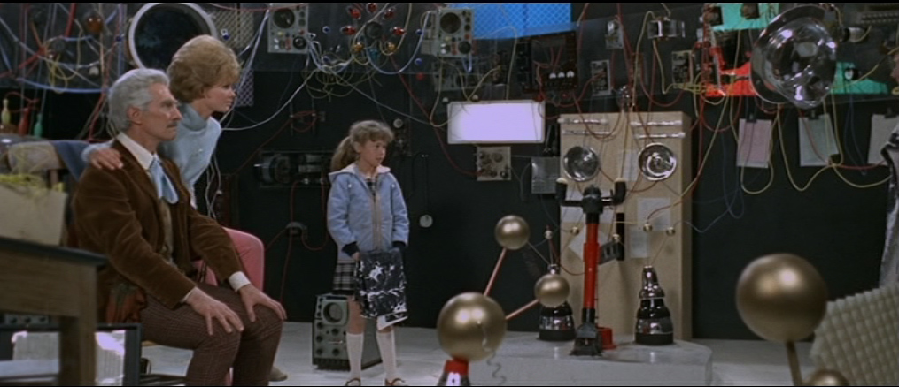
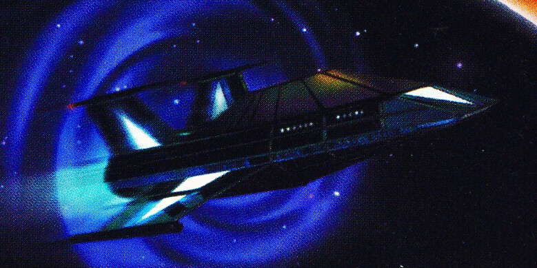
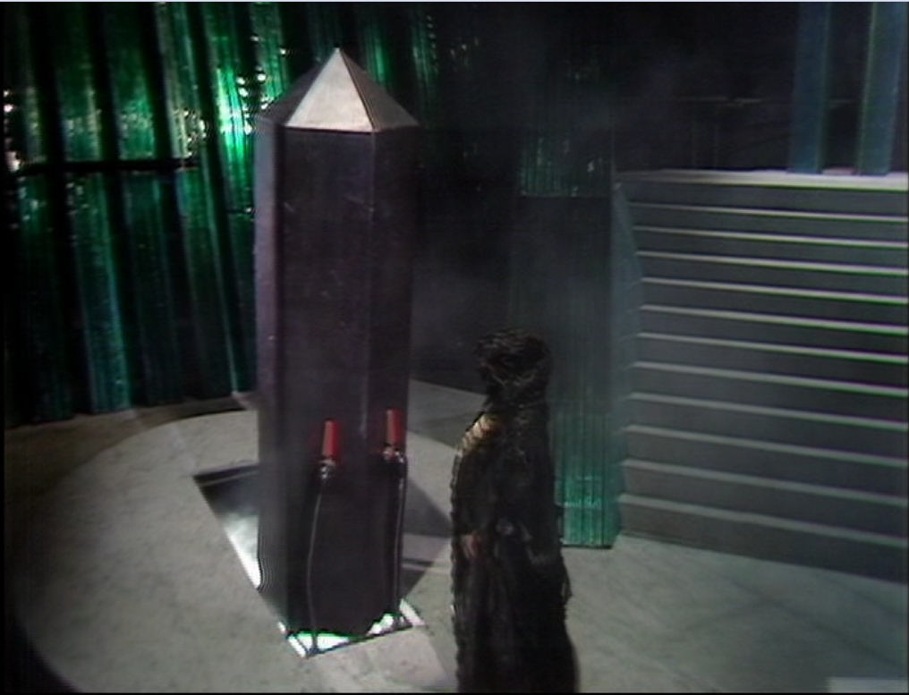
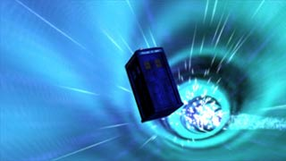
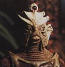
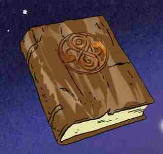
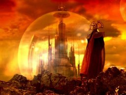

The History of The Time Lords Part I I
THE TIME OF LEGEND
The Great Days of Rassilon
from this instant on, we are the Lords of Time!"

TABLE OF CONTENTS

Click on paragraphs to see color coding for sources
THE HISTORY OF THE TIME LORDS PART II: THE TIME OF LEGEND
The Great Days of Rassilon
This is a Time Line of Ancient Gallifrey. It's dating system is based off the Gallifreyan year (which is the same as Earth's). Year Zero is the year that (according to Doctor Who Magazine) Rassilon created the Eye of Harmony. According to the FASA Role-Playing Game this happened 23 years after Omega's death. According to"Christmas on a Rational Planet" all of this happened around 3,500,000,000 BC.
Once the Eye of Harmony is anchored, time begins moving at a different speed on Gallifrey then the rest of the Universe - around 5 times as fast to begin with. But the differential isn't constant, it is slowing by about 1 second every hour. The Doctor was born around March 30th, 1213 AD and when Greyjan had served one year as President of Gallifrey (and the Doctor was 753), the Earth date was 1752 AD.
The following information contains many spoilers.
-23.96
(the year Omega dies /
before Omega dies /
day 14 /
less then 1000 years before retiring / shortly after Omega dies /
possibly day 162)
Rassilon is 1st President of the High Council
and sits upon the
Kasterborian Throne
. Rassilon is the first and only President to hold the title Lord High President.
Ruling the High Council
(and the Supreme Council)
is
the Triumvirate:
Rassilon, Omega,
and the Other.
Rassilon and Omega are politically opposed, but despite this they are friends. Other council members include Lord Griffin,
Jodelex
and Prydonius.
Future presidents while have Presidential CATs
(Calculating Animal with a Tail) until they become extinct.
??
The beginning of"the Great Days of Rassilon." Various species,
like the Urbankans, will remember Rassilon,
though some will know him as Azaron, Razlon, and Ra.
?? (before being entombed)
Rassilon creates the new Gallifreyan social
structure in the form of an oligarchy.
The Constitution is written, and Rassilon lays down the Five Great Principles of government.
Under Rassilon's Law, decedents of Rassilon automatically have preference over all other Gallifreyans for the
position of President. But the
Constitution can be re-written by the President if he has the unanimous approval of the High Council. This will
happen several times over the centuries as
numerous pieces of legislation are added to it.
By the modern era Article 17 of the Gallifreyan Constitution states that any Time Lord can declare himself a candidate
during an election.
?? (during the Great days of Rassilon)
Rassilon lays down 5 great principles.
Patience's husband (Omega) is very busy rebuilding Gallifrey.
?? (before the Qqaba mission)
Patience and the Other begin having an affair behind Omega's back. Its worth noting that when Omega meets the Doctor in The Three Doctors he shows no signs of recognizing him as the Other. This will change by the time of The Infinity Doctors.
?? (a long time before Deadly Assassin)
The new President pardons several prisoners as his first act in office. This starts a tradition that will last till the time of the Doctor.
-23.96? (During the time of Rassilon)
Fordfarding is the Castellan who works under Rassilon. He becomes legendary for his obduracy and lack of imagination.
A Hand of Omega
-23.94
(the year Omega dies /
day 23)
After a great deal of trouble with the
prototype, Omega (with Rassilon's help) finishes creating both of the Hands of Omega.
These device
s are called the Hand
s of Omega
for political reasons.
They are designed to customize stars
and
are able to harness and manipulate the entire power output
from any kind of star, in
all is various
forms.
A stellar manipulator can remotely drain off and store the energy of any kind of star, including the Prime Eye of
Harmony on Gallifrey. In just a few minutes this would disable all available time travel facilities.
The Manipulators can also stop the broadcast of artron energy from the Eye of Harmony to the TARDISes, and if focused
properly
can rip out the heart a TARDIS.
The stellar manipulator has an isomorphic remote activator that looks like a medallion. The manipulator
is programed in the Old High Gallifreyan computer language and
can be considered alive. It has the ability to fly under its own power
and initiative.
In future years, the Time Lords will come to believe that there was only ever one Hand of Omega.
(As far as the Doctor knows) These devices are the most powerful and sophisticated remote stellar manipulators that
will ever be created.
-23.93
(the year Omega dies /
day 26)
The Temporal Scientist Vanderkerian and
Omega discover the secret of time travel (After
Vanderkerian's death
Rassilon takes credit for this discovery). Rassilon
creates the Equation of Rassilon (which allows travel in a Time Corridor).
-23.93
(the year Omega dies /
day 29)
Rassilon begins planning the details of
the Qqaba mission.
Omega begins to design the Eye of Harmony. He realizes that the energy of the Eye must be releases as an
osmotic stream by shifting the Eye slightly into the future.
-23.89
(the year Omega dies /
day 43 /
probably a few centuries before it is complete)
The architect Rassilon begins designing
the Citadel and redesigning the rest of the Capitol.
The Citadel is designed to be an hourglass shaped fortress.
For more information see:
The Capitol
-23.86
(the year Omega dies /
before day 50)
Rassilon raise taxes, begin funding pure
research,
and begins segregated schooling.
-23.77
(the year Omega dies /
day 84
/ after the Curse)
Rassilon invents the Sash of Rassilon
which uses stasis halo technology.
The person wearing it is capable of surviving in a black hole without being thrown into a parallel universe of antimatter.
It also allows the wearer to absorb energy from the Eye of Harmony giving them unlimited regenerative powers.
It will be worn by the Lord President during ceremonial events
and will be regarded
by some
as
the holiest of the relics from Rassilon's time. It will also adjust the wearer's biodata to make it easier for
them to access the Matrix.
Like all of the ancient artifacts, it is made of pure non-atomic matter (ie its not made of atoms but instead perfectly
flat planes)
designed to deliberately resist analysis.
The artifacts of Rassilon are powerful and have an unknowable intelligence.
They can read people’s intentions and actions like a book and
can choose protectors. They can even influence their protector's subconscious actions.
-23.71
(the year Omega dies /
after the looms / before unlimited time travel / almost certainly after the Vampires are released / day 107)
The Biosynthesist, Thremix, proposes the
concept of
regeneration
and creates the Immortality Virus.
?? The ceremonial armor of Faction Paradox is made of the bones of Vampiric Time Lords. The Faction claims that these are the bones of Gallifreyans from an alternate universe where the Time Lords lost the Eternal Wars. Others claim that the contamination happened in this universe during the Eternal War and thus the bones are also derived from the same universe. Official Time Lord history claims that no Time Lord was ever infected with the V-Factor. The Faction Armor could be made of failed experiments in developing Regeneration. Alternately the Armor could be the bones of future Gallifreyans who finally succumbed to the V-Factor in the Immortality Virus.
-23.68
(before Susan leaves Gallifrey /
day 117 of year of the year Omega dies)
The Legacy of Rassilon
(aka the Immortality Virus) is perfected
by the Biosynthesist Thremix
in secret.
Regeneration was created to extend the already amazing Gallifreyan lifespan.
The Legacy of Rassilon creates
self-replicating biogenic molecules
that work ceaselessly to repair and prune damaged and malformed cells.
If the body is subjected to great stress,
the permanently carried self-replicated biogenic molecules
rebuild the body cell by cell causing a complete Regeneration of the body
(and to a lesser degree) the mind. After 12 regenerations the biogenic molecules begin to decay naturally.
The regenerative capabilities of a Vampire and the Immortality Virus are almost identical. Many historians suspect
that Immortality Virus might have been derived from the V-Factor.
Rassilon is quite obsessed in the possibility of immortality and funds Thremix's experiments. Rassilon
keeps the discovery secret for now but makes plans to give the Immortality Virus
only to Loom-Born (which Rassilon views as the elite of Gallifreyan society). Once the Virus is ready, all of
the Loom born will have 13 lives.
A Metamorphic Symbiosis Regenerator can be used to allow someone without the Immortality Virus to regenerate.
If someone tries to clone a Time Lord the clone will not have the Immortality Virus due to their lack of a symbiotic
nucleus.
For more information see:
Regeneration
-23.
7? (before I.M. Foreman leaves Gallifrey /
before Executive Action)
Rassilon
secretly shares the Immortality Virus (aka the Legacy of Rassilon) with a
select group of Gallifreyans.
Some of these Gallifreyans will later try to assassinate the Special Executive.
Regeneration was still a relatively risky procedure at this point. While regenerating a Gallifreyan's
body might incorporate any foreign Biodata it came in contact with.
(Thus a Gallifreyan could regenerate and find himself to be half human.)
This problem was corrected before the Doctor's time. Omega is giving the Immortality Virus.
?? (before leaving Gallifrey)
I.M. Foreman will acquire the Immortality Virus.
-23.68
(the year Omega dies / day 118)
By this point Omega is probably well liked by the people of Gallifrey while Rassilon is probably hated. Omega
is probably planning a democratic revolt against Rassilon.
-23.66
(the year Omega dies /
day 123)
Rassilon probably plots to kill Omega.
-23.
64
(
After the Minyan incident / after Omega has regenerated / after several other Gallifreyans have regenerated / before
the Qqaba mission)
Rassilon, Omega, and the Other contemplate
the newly create Hand of Omega and the future of Gallifreyan society.

The interior of a Prototype TARDIS
-23.62
(the year Omega dies /
day 140 /
before the Anchoring of the Web)
Rassilon finishes designing the temporal flux control for the Power Mast that will receive the power from Qqaba. It
is mounted near the Panopticon. Technicians begin developing the Chameleon Circuit.
Technicians
(including Omega) begin
designing the first
(Vortex based)
Proto-Time Travel Capsule.
The Type 0
Proto-Time Travel Capsules are constructed.
These will be the first Time Travel Capsules which will use the Vortex instead of Muon based
Interstitial Motive Bridges. They are powered by Taranium.
The First Time Travel Capsules didn’t use matter for their shells. They were almost pure forced-matter calculation
and
thus were composed of the equations of pure movement, making them the essence of transport.
They are Dimensionally Immanent (ie smaller on the inside then the outside)
because they didn't use warp matrix engineering.
It’s interior resembles the interior of the “Cushing Film’s” TARDIS.
By decree of Rassilon this and all future TT Capsules will carry certain technology - including Banshee Circuits and
the ability to track a vampire based on a blood sample.
-23.48
(the year Omega dies /
day 187)
Possibly because of
the rumor that Rassilon was a Vampire
Jelen attempts a coup to remove Rassilon from power. It fails.
-23.44
(the year Omega dies /
day 203)
The Fleet of StarBreakers
and Sunskipper scouts leave for Qqaba.
The flagship of the fleet is the Starbreaker Aeon.
Omega's ships is the
Starbreaker Eurydice.
Lord Griffin and Jodlex travel on board the Aeon.
Only a handful of crew of these ships is over 10 years old, the rest are Newborn from the Looms.
-23.44
(after Omega leaves for Qqaba /
day 203)
Under Rassilon's command, General Gimel
leads the Watch to arrest or kill everyone who could be a threat to him.
-23.44
(the year Omega dies
/
day 204)
Star Death (part 1):
Omega's fleet arrives at the
Population III
Q star
named
Qqaba
in what will be known as the Sector of Forgotten Souls.
Qqaba is located 9.6 LY from Gallifrey
in
the constellation of Ao
.
As part of the future Time War the Black Sun agent Fenris the Hellbringer (from 30,000 years in the future) arrives
on the Aeon and sabotages all the Starbreaker's stasis halos to prevent the Gallifreyans from ever becoming the Lords
of Time.

-23.43
(almost a decade after the Curse / 2 million years before TID? / around 10,000,000,000 years after the Big Bang /
day 205 /
before the Eye of Harmony / after Omega served on Gallifrey's Council)
Star Death (part 2): Omega's assistant Vandekirian
(probably operating on Rassilon's instructions)
sabotages the Eurydice's fusion engines and is killed by Omega. According to the history books Omega cut off Vandekirian's
hand and put it in the Stellar Manipulator, dubbing it the Hand of Omega. In reality he simply used the severed
hand to activate the symbiotic key to launch the Hand of Omega.
The Hand of Omega is used to destroy a
star
named Qqaba
in a supernova which then collapses into a singularity.
The collapse kills the Solarians who live on the surface
of Qqaba.
While Rassilon controls the power receiving mast the
Eurydice leads the other Starbreakers towards the singularity.
The
combination of
Fenris's
damage to the stasis halos and the Vandekirian's sabotage causes part of the Eurydice to break up and
Omega to be sucked through what will become a black hole and into the universe of antimatter.
The ship becomes trapped between 2 universes and appears in the middle of a field of temporal distortion every 100
years.
Rassilon repairs the stasis halos on the other Starbreakers in time to prevent their destruction.
By this point Rassilon has the (possibly magical) power to emit ElectroDirection beams from his own body. Fenris
is hurled into the Vortex.
Rassilon recovers the Time Warrior
Fenris'
Directional Control Time Belt
which he uses to
discovers the First Secret of Chronoambulatory Egress
and master directional control of time travel.
This discover will lead to the an understanding of the glorious secrets of Time.
The survivors of the mission are bombarded with chronons from the destruction of Qqaba.
This Time Energy anointing
mutates their DNA
creating a new helix that acts as
a"fast line" which extends into the fourth dimension and maps the them into the Vortex.
Once linked
to the heart of space time they have
access to the Power of Creation and they are capable of changing their time state by thinking the right Block-Transfer
Time Equation
allowing them to interact with the deep-level process of the Fourth Dimension.
Time Lords control their destiny with mathematics and Rassilon will be particularly talented at this.
Because of this they are
the first Lords of Time
and one
of the very few High Evolutionary species.
The Other
(Doctor) might have been the first Time Lord. In the future legends will claim that the first Time Lords
were true immortals.
Mother (probably the Matrix) claims to have back engineered the Time Lord species into existence so that she
would have her own point of creation.
Rassilon uses his new powers to pass a new Law of Physics which seals
the naked singularity of Qqaba behind an event horizon. Thus the Time Lords invent the first Black Hole.
The
detonation creates the
Veil Nebula.
He stops irrationality from escaping and repealing the laws of physics.
This detonation provides Time Lords with the initial power source for their experiments into Time Travel.
It is equivalent to the power radiated by a thousand suns.
For more information see:
Time Lord Biology
-23.43 While Omega and his crew are presumed dead Omega actually survives by shear force of will (and a side effect of Rassilon creating new physical laws). Trapped in a limbo universe of anti-matter, he discovers that using the power of the black hole's Singularity he can create what ever he wants using a process called Psychosynthesis. The loneliness and feelings of betrayal Omega feels drive him mad. The Anti-Matter Universe has existed since the beginning of Time. It can only be reached via the singularity at the heart of a black star or by crossing certain barriers at the edge of the Universe.
-23.43
The Gallifreyans now control
the fundamental forces of the entire Universe
, making them the
first Type 4 Civilization
with a Level 10 Society.
-23.43
(when Omega dies)
Many regard the death of Omega as the
point at which the new government starts to go bad.
-23.43
(the year Omega dies / day 206)
Patience sees the Starbreakers return from Qqaba.
Patience will go on to live in the House of Lungbarrow for countless generations.
-23.43
(after they have a Power Source /
before the Eye of Harmony)
The
Type 0 TT Capsules are now operational. One of these is Rassilon's personal capsule. They receive
their power from
(what will become) the Prime Eye of Harmony
(or the Time Sun as it was known at the time).
This Artron Energy is broadcast though the Vortex to the Capsules.
The Space/Time range limit for these broadcasts define the
Space-Time Parameters of TARDIS operation. By modern times the forward Time Parameter of the is about
3,510,000,000 IR
(10,000,000 AD).
This defined the outer limit of time travel.
-23.6~
(right after Omega's death)
Rassilon constructs the Omega Memorial
on top of the Citadel (tallest tower in the Capitol). Qqaba is renamed Omega's
Black
Star.
Vandekirian is vilified by the people of Gallifrey. Rassilon takes credit for Vandekirian's discovery of time
travel.
?? The song
Rassilon's Lament
is written.
It will eventually be used in conjunction with the Harp of Rassilon to open a hidden passage to the Time Scoop.
?? A Fable about
Paylix the Annoyingly Curious will become popular. However nobody knows that Paylix was in fact Omega.
In the story Paylix wanted to know everything about everything. When he does learn everything about everything
the whole universe stops and (in order to restart it) Paylix was exiled to another universe.
Using the Equation of Rassilon The Time Program creates the Labyrinth and uses it to travel in time. The Labyrinth is the framework beneath normal time - and will eventually become the foundation of History itself. The Labyrinth can be used as a primitive form of time travel, involving Time Corridors. It consist of a network of open ended time corridors that connect numerous points in space and time to a labyrinth complex of corridors. This interior complex of corridors might have been created by the Time Lords, or possibly by the Eremites, before the Eye of Harmony was created. Later the Matrix's Secure Information Dump will be stored in the Labyrinth.
?? (In the days after the Time Lords attained supremacy / before the Web of Time is created)
Rassilon witnessed a time when the multiverse would shatter in what became known as the Breakdown. Horrified Rassilon devoted his life to ensuring the stability of the Web of Time. Rassilon kept his knowledge of this secret from all but the Keeper of the Matrix. He prepared the Arcanities of Rassilon to be opened only the Breakdown was imminent.
?? (before warp matrix engineering, but after time travel)
The Tachyon is first hypothesized on the nexus world Sol III (Earth). The discovery is taken back to Gallifrey where it is developed into Gallifreyan tachyonics.
?? (Probably before the first TARDIS / during the Dark Times)
The Time Lords invent Huon Energy for their time travel technology. This could be done using artronically charged water, to extrude inert Huon particles through a flat hydrogen base. The particles would then needed to catalyze inside a sapient being who is in a high state of excitement and stress over a 6 month period (probably because only sapient beings can crystallize quantum events). Huon particles will be used in the Heart's of their TARDIS's and other temporal devices. When inert Huon Particles are safe but if given a chance to catalyze in a sentient being they become deadly. (Its possible that Huon Particles generate Fluon Radiation). While in a liquid state at body temperature, sufficient stress can cause them to ‘boil’ shifting the host through time and space towards the magnetic field of other huon particles. The Time Lords eventually discovered that Huon Energy could unravels matter’s atomic structure on a vast scale.
-13.83 (9.6 years after Omega's death / some time before the first Otherstide)
The Other and Rassilon watch the destruction of Qqaba when the light reaches Gallifrey.
-13 (10 years before The 4-D War)
The Time Lady Rema-Du
(daughter of
Lord Griffin and Jodlex
) Begins training to recover Fenris from the Vortex's Zone of No Return. The High Council wishes to interrogate
him about the future Time War.
All they know is that because of
the Time Wars, an unnamed species will attack Gallifrey
(probably the Fenris incident)
in retaliation for the things the Time Lords will do to them before the
Time Lords have even heard of them in the first place.
The 4-D War: The Time Lords are involved in a time war with an unknown enemy. The Time Lady Rema-Du (daughter of Lord Griffin and Jodlex ) and the Special Executive (Cobweb, Millennium, Wardog, and Zeitgeist) recover Fenris the Hellbringer to aid the Time Lords in the War in Four Dimensions. They learn that the Time Lords enemy in this time war is the Order of the Black Sun and that they are based 30,000 years after the Qqaba mission.
?? (almost certainly after the Qqaba Mission)
Rassilon develops a new plan to provide power for Gallifrey forever using super-radiant scattering. He begins work on creating the Eye of Harmony.
??
(before the Eye was brought to Gallifrey)
Rassilon
created
an ebonite rod known as t
he Rod of Rassilon (sometimes
translated as the Great Key). It allows a Time Lord to open the Eye of Harmony
or access its power mast
in the Panopticon. It will be stored in the museum and only
carried by the President during ceremonial occasions.
Like all of the ancient artifacts, it is made of pure non-atomic matter (ie its not made of atoms but instead perfectly
flat planes)
designed to deliberately resist analysis.
The artifacts of Rassilon are powerful and have an unknowable intelligence.
They can read people’s intentions and actions like a book and
can choose protectors. They can even influence their protector's subconscious actions.
The harnessing of the Eye of Harmony
"And Rassilon traveled into the black void with a great fleet. Within the void, no light would shine, and nothing
of that outer nature continue in being except that which existed within the Sash of Rassilon. Now Rassilon
found the Eye of Harmony, which balances all things that they may neither flux, nor wither, nor change their state
in any measure. And he caused the Eye to be brought to the world of Gallifrey, wherein he sealed this beneficence
with the Great Key. Then the people rejoiced..."
- The Book of the Old Time

The Eye of Harmony's
Power Mast
-0.22 (23 years
after the death of Omega /
3,500,000,000~ BC /
probably after the Qqaba mission
)
Rassilon travels to Omega's black hole (aka Qqaba) in the Sector of Forgotten Souls.
He uses
Amaranths and the Sash to enter
Omega's Black Star. He then
uses a dimensional rift to
removes the black hole's nucleus and brings it to
a micro-universe located under the Capitol's Panopticon
(assembly hall)
.
Once there it is named the Time-Sun. The
Dimensional Rift remains in the Sector of Forgotten Souls in the center of massive amounts of dimensional instabilities.
It still intermittently connects that region of space with the event horizon of the black hole. Thus the black
hole can still be accessed every hundred years from this point.
For more information see:
The Eye of Harmony
The first Amaranths are built by Time Lord Maintenance Engineers to control the side effects of black holes by imposing rationality.

The Space Time Vortex
Fearing that other races might create forms of meaning and causality that are hostile to Gallifreyan society, the Time Lords decide to anchor all of causality to fit their observations. This was done by turning the Time-Sun into the Eye of Harmony. Working with the wisest of the Techno-Magi, Rassilon discovered the secret of Temporal Fission and set the Eye of Harmony an eternal dynamic equation balanced against the mass of Gallifrey . Rassilon had to find and assemble the Key to Time to anchor the Web of Time, for only the Key to Time has the abilities equivalent to the Eye that Rassilon wished to construct. At the moment the Web is anchored the High Council stands before Omega's Black Star as it is transformed into the Eye of Harmony while other Time Lords in Proto-TT Capsules wait at the extreme boundaries of what would become the Noosphere. The broadcast limits of the Eye of Harmony set the Space/Time range limit for these TARDISes and thus define the Gallifreyan Noosphere. While the Time Lords' control of the Weak Nuclear Force extends only to the limits of this cluster of Galaxies, the forward Time Parameter of the Noosphere is about 3,510,000,000 RE. The backwards limit of the Noosphere is a few thousand years after the Event 0 (the Big Bang). These defined the outer limits of time travel. The Web of Time, within the Space-Time Vortex, is constructed by Rassilon and the Other. The Vortex encompasses all universes. The Eye of Harmony creates a Universe of Positive Time, serves as an anchor for the continuity and causality of the Universe, and lockes down the Web of Time. This becomes known as the Primary Timeline. The creation of the Web of Time also creates Anti-Time - the opposite of Positive Time. Though given an anchor about which to turn the whole of History is currently undefined and filled with possibility at this point. The construction of the Web of Time is a feat worthy of a Level 11 Society. But Rassilon will keep much of this technology to himself. The rest of Gallifreyans and Time Lords will remain a Level 10 society.
The Time Lords use the Eye of Harmony's control over the Web of Time and their ability to manipulate the Weak Nuclear Force to define the rational laws upon which it functions. What is written in Worshipful and Ancient Law might become the laws of science for the noosphere of the Time Lords. Before this point Magic was used more often then science in the Universe. This Intuitive Revolution destroys Irrationality and Magic and prevents White Holes from existing. Lokic fields cancel out almost all of the Odic Energies of the Universe. The Gallifreyans cast out the irrational parts of themselves creating Cacophony (a being of irrationality and magic) who is banished from the Universe. Cacophony is a personification of a potential Kuhn Paradigm Shift which alters how the conscious mind collapses mixed-state events. This lack of belief might have caused the destruction of flying horses, dragons, unicorns, faeries, slithy toves, bread-and-butterflies and other illogical creatures. It is likely that that this effect if retro-active, which would explain the failure of the Pythia (and other prophet)'s powers. The only magic-related power to survive is psionics because it operates on vaguely scientific lines. Occasionally various species will produce a being that is particularly gifted in using the remaining Odic Energy of the cosmos. They are able to see the future, and heal people. The gift of precognition will be particularly common, though most Time Lords refuse to knowledge it. For more information see: The Vortex and The Web of Time
NOTE: The Vortex's creation by the Time Lords was stated quite clearly in NAs, but subsequent books like Quantum Archangel have show that the Vortex is the 5th dimension and the foundation of the first 4 dimensions. This would mean that it was formed during the Big Bang.
?? (during ancient Gallifrey / a long time before the Spiral Scratch)
The Time Lords create the Spiral Chamber. This device serves as porthole to access the Spiral at the heart of the Space-Time Vortex.
?? (at the Dawn of the Universe / billions of years before the 17th century)
The Carrionites are a race who can use words as their science to cast massive spells. They also can use DNA replication modules (in the shape of voodoo dolls) to control people. (possibly an outgrowth of Faction Paradox rituals or more likely surviving bits of Cacophony's Odic Energies). Legend claims they eat their own husbands and children. They used grief and suffering to enhance their magic and attack hundreds of nearby planets. The Hervoken fought a war with the Carrionites.
?? (countless thousands of years before Shada / before Salyavin is imprisoned / When the Carrionites were active)
Lady Scintilla is one of the greatest Visionaries of the Sisterhood of Karn. She is also a tyrant who conspires with the Carrionites. She was known for having 6 inch long razor sharp finger-nails. Scintilla is eventually imprisoned on Shada for conspiring with the Carrionites. (Like Salyavin, Sabjartrik, and Rungar) Scintilla is considered to be one of the Ancient Outlaws. The Doctor probably doesn't meet her till the events of Shada.
?? (at the Dawn of the Universe / billions of years before the 17th century)
The Carrionites and Hervoken and both groups were banished from the cosmos by the Eternals because their war threatened the Universe. The Eternals imprisoned the Carrionites in the into the Deep Darkness, behind the 14 stars of the Rexel Planetary configuration. This is almost certainly the same as the Hecatryx dimension that all the witches exist in in"The Witch from the Well. " By the time of the Doctor the Carrionites will be known only in legend.
0.00 (The Moment the Eye of Harmony was activated / shortly after the founding of the Panopticon / Intuitive Revolution Night is probably not New Year's D ay )
0.0 Local Dateline . The old Gallifreyan calendar is abandoned. Rassilon's harnessing of the Eye will become known as a galactic legend and Gallifreyan society will be regarded as utopia by many lesser species. This would be 3,5 03,412,399 BC in Earth terms. Rassilon will become known as Asilon, Raslon, and Ra.
0.00
(The day that Rassilon anchors the Time Lords to the Vortex)
The Yssgaroth make their first attack
on Gallifrey, destroy some of the machinery used to create the Eye of Harmony, leaving an impossibly massive empty
space sitting under the Panopticon, with only the Eye of Harmony itself at the center of the void. This void
becomes known as the Caldera.
?? Rassilon meets the Guardians. He is informed that even as the Time Lords have authority over the Spiral Politic so to do the Guardians have authority over the Time Lords. Rassilon is banished because he questioned to deeply and because of the arrogance of the Time Lords. Rassilon will keep the knowledge of the Guardians' supervision of the Time Lords a secret that will be passed down to each President upon his ratification.
?? The Time Lords try to research the origin of the Celestial
Toymaker (the Guardian of Dreams), but run away when threatened by his games.
There were many R.O.O. (Rassilon, Omega, and the Other) texts. Many of these Elder Books of the Dark Time are written based on the rituals of the Gods of Ragnarok and the Eternals. These books contain the rites and incantations that can control the Chronovores. The Green Book Of Gallifrey, and the the Little Black Book of Gallifrey speak of the Timewyrm, the end of the Universe and tells of a white hole catastrophe in the future. The appearance of the Timewryrm will signal that (in a general sense) the end of the Time Lords (and perhaps the Universe) is not far off. The Little Red Book of Gallifrey dealt with the Dark Time, magical incantations, Rassilon the Ravanger, Omega the Fallen, and the Other. The Ancient Covenant is compact that forbids the Time Lords from reaching the Six-Fold Realm. The Other Scrolls have a prophecy of a Time Lord who will find the Lost Scrolls of Rassilon and will lead Gallifrey from darkness. Other important texts are The Triumphs of Rassilon, The Bones of the Dead, and the Runes of Rassilon. One book with a cover of reptile skin had the Seal of Rassilon on it. This book will survive until the end of the Universe and contains a last prophecy which terrifies the Doctor. See Event 2 (in the Post Gallifrey Timeline) for what the prophecy might have said.
?? Rassilon ensures that hidden in all Gallifreyan DNA are 'killing lessons' to destroy Cacophony should she ever reappear.
1 (1 year after the Eye of Harmony /
1 LD
day 10 /
~3,500,000,000 BC /
4 generations after Omega started working on the Barriers)
Rassilon,
Jelen,
and the other disciples of Omega
finish creating the Transduction Barriers
and the Quantum Force field. Transduction Barriers are an 10 dimensional defense field that
separates Gallifrey’s continuity and history from the rest of the universe
by locating it in a Micro-Universe outside of Time.
Thus when you are on Gallifrey you are
"outside" of the Universe and in Inner Time.
The transduction barriers are regarded as one of the greatest achievements of time lord science.
They block atomic sized infiltrations, all weapons fire, and kamikaze runs
but can’t stop spaceships from landing.
The Lord President’s Rassilon Imprimatur and Presidential Code allow him to pass through the transduction
barrier at will.
When a Timeship passes through the Transduction Barriers the effect is visible from Gallifrey’s surface.
The Quantum Force-Field serves as Gallifrey's Secondary Defense Barrier.
It protects against more conventional threats and
stops ships from landing.
Anything that touches a transduction barrier will be destroyed.
It is impossible to completely disable without vaporizing Gallifrey.
Despite being in Inner Time, Gallifrey is still liked via a real-time analogue to its former location in the Web of
Time.
This analogue time moves at a different speed then the rest of the Universe.
The Eye of Harmony was activated in 3.5 Billion BC but approximately 2 million years later, when Greyjan had served
1 years as President of Gallifrey, the Earth date for Normal Space was 1752 AD.
So from this point forward, 1 year in the Inner Time of Gallifrey would equal ~1750 years in Normal Space.
For more information see:
The Transduction Barriers
??
(years after the Eye of Harmony is created / before the first Otherstide)
The Time Lord known as the Other uses
Block Transfer Mathematics to discover
transdimensional engineering (aka Warp Matrix Engineering). This is a key discovery and the Time Lords abandon
Tachyonics for Warp Matrix (transdimensional) Engineering.
?? (after Warp Matrix Engineering)
Rassilon installs numerous dimensionally transcendental
chambers in his Foundry.
?? (after the Time Lords acquire Warp Matrix Engineering)
The Other builds
an excellent Zero Room under the Junior Senate Block.
?? (after the banishing of Cacophony)
The only magic-related power to survive is psionics because it operates on vaguely scientific lines. This power
forms into a network of Ley Lines that cross the cosmos. In order to maintain rationality over the people of
the Universe, the Time Lords insert massive receivers into the Ley Lines to act as a distant early warning system.
Over the years the power of the Eye of Harmony grows. The structure of the whole planet becomes a bio-system whose biodata acts as a planet sized receiver and processor of data from the rest of the universe. The Lords of Time observe and make predictions about Web of Time (aka History). They use this information to make projections that map out every inch of the Universe. They see that History is currently undefined and filled with possibility. During this time (despite the protection of Sash of Rassilon) Rassilon suffers from gamma radiation poisoning from the Eye.
? (before time travel / after Block-Transfer / At the time of the Type 30)
The Chameleon Circuit is successfully tested.
?? (when the Chameleon Circuit is being tested / but before proper time travel is invented)
The Gallifreyans are in a"Time Race" with the Crialans of Crial to see which race can develop Time Travel first. The Crialans were a race of telepathic bacteria that infect hosts. The Gallifreyans stole several innovations from the Crialans.
3 (3 years after the Eye of Harmony / 3 LD)
Rassilon creates the Great Key of Rassilon (not to be confused with the Rod of Rassilon). Like all of the ancient artifacts, the Key is made of pure non-atomic matter (ie its not made of atoms but instead perfectly flat planes) designed to deliberately resist analysis. It can harness and use the entire output of the Eye of Harmony. The Great Key of Rassilon is so powerful that the operating system became sentient and it developed a conscience and an unknowable intelligence. It c an read people’s intentions and actions like a book and can choose protectors. It can even influence their protector's subconscious actions. The Key appears to have the ability to wipe the memories of its users (as per the wisdom of Rassilon). For more information see: The Eye of Harmony
The Doctor's Granddaughter
Susan and her father (the Doctor's son) end up fleeing into Gallifrey's past. Patience probably came with them. Susan might have become known as Arkytior .
3?? After insuring the safety of Susan, Patience flees Gallifrey (possibly because there is already a version of herself living there?). She departs in an ancient Prototype Time Travel Capsule that belonged to her husband (probably the Other but possibly the Omega). The Proto-type TT Capsule that Patience fled in was damaged and it rips a hole in the Vortex as it travels. Patience ends up on the planet Salomon in the year 2,000,000 BC where she is frozen in suspended animation for approximately 2 million years.
?? Susan's father leaves to serve on one of the Bow Ships of Rassilon. The Other will claim to be Susan's grandfather, and will raise Susan with the help of Mamlaurea from Tersurus. She was probably living in the Other's estate right outside the Capitol. Susan spends her whole life moving from one place to another and feels she has never had a real home.
?? (before the Tepesh incident / when the Eye of Harmony is created / before or at the time of the first TARDISes / probably before Susan leaves Gallifrey)
The symbiotic nuclei are developed b y Rassilon. These nuclei allow a Gallifreyan to make the Rassilon Imprimatur on a Time Travel Capsule and to allow them to withstand the energies of the Vortex. The Rassilon Imprimatur is needed: to 'prime' a TARDIS, form a quasi-symbiotic link with the Capsule, and thus have access to all the Powers of Creation. Beings with symbiotic nuclei and a TARDIS are known as Time Lords. Symbiotic nuclei can given by exposing someone to a little of the power from the Eye of Harmony or by injecting them with Retro DNA serum in the form of a red liquid. The existence of the Rassilon Imprimatur is kept secret for some time.
?? (when Time Lords first began to explore history)
The pioneer Time Lord, Astrolabus, charts the Meridians of Time. He claims to have been the first to do this and release Gallifrey from the chains of the present.
?? The Time Lords being using space-time telegraphs to communicate across space and time. This technology will remain in use (despite its potential to alter history) until the development of hyper-message cubes and Time Rings.
?? (about the same time the Gallifreyans develop Time Travel / after the D-Mat Gun)
The bacteria based Crialans develop Time Travel. They plan to travel back in time and infect all the races in the Universe. The Time Lords declare a Time War on them and erase them from history. Some of the Crialans' time technology is stolen by the Time Lords.
?? The Archons are one of the Old Ones from the previous Universe. They moved and danced to the gravitational movement of the stars and the planets of the cosmos (the Music of the Spheres). The Archons had become the rulers of Time in this Universe, but the Gallifreyans stole their 'seeds.' These seeds were used to grow the first TARDISes.
?? (almost certainly while Rassilon is still alive)
The Time Lords fight a time war with the time-travelling Vondrax. While the Vondrax lost they trap they do manage to erase one of Rassilon's generals from history.
? Rassilon gains the titles Patrice of the Vortex and
Ravager of the Void.
?? (before Executive Action)
Rassilon bans weapons that are capable of killing Time Lords
(except for
Stasers which can only be used by members of the Watch).
?
(the Other does this hundreds of times before the First Otherstide)
The Other warns Rassilon that if he sanctions the use of
violence against the people of Gallifrey he will leave. He will make this warning hundreds of times before the
first Otherstide.
?? The Other creates the Interventionists including the Celestial Intervention Agency (CIA) from Rassilon's personal guards. (The Matrix might have also had a hand in their creation). The CIA was originally formed to deal with minor issues that the Time Lords viewed as being beneath them, but they would eventually grew to be a very powerful organization. The CIA agents of the Doctor’s time believe that the current CIA is exactly what the Other would have wanted. For more information see: The CIA
? (probably before Black Sun Rising)
The Cult of the Black Sun is created by the Remote (which was
created by the Faction Paradox from Gallifrey's relative future).
Black Sun Rising: The Time Lady Rema-Du and the Special Executive (Cobweb, Millennium, Wardog, and Zeitgeist) travel to Desrault to negotiate for mineral rights with the Sontarans and the Order of the Black Sun. The Sontarans frame the Time Lords for the assassination of the Elder of Black Sun. This is the catalyst for the start of the Time War (also known as the War of Four Dimensions). The Black Sun (and many others) believe that the Time Wars were started by the Time Lords.
?? (during Susan's childhood)
Susan watches the horrors of the Games.
?? Numerous Vampires can also be found in the Games.
8~? (when the Type 1 is created)
By this time the Gallifreyan chronosphere is filled with failed prototype Tine Travel Capsules. Occasionally these abandoned TT Capsules will become sentient and escape Gallifrey’s temporal pull. Once free, they slingshot through the space/time continuum.
?? (Thousands of years before modern Gallifrey)
The Time Lords realize they will need an organic component
to master dimensional stability in space and time.
Rassilon uses Warp Matrix Engineering to design the Protyon Core for the first Time Travel Capsule.
These units make up the central cortexes of their timeships.
8~?
(2,000,000 years before Ancestor Cell /
a few centuries after the Eye of Harmony)
The Scientific Elders design and build the Type 1 Time Travel
Capsule in a solar workshop using tools such as spanners.
The process used to create a TARDIS is one of the greatest secrets of the Time Lords. Susan's Grandfather
has never actually piloted a TARDIS though he was one of the pioneers who helped create them.
These TT Capsules allow symbolically bonded Time Lords to access and use the Power of Creation.
All TT Capsules receive their power from the Prime Eye of Harmony.
The first TARDISes are small boxes that can only hold 3-4 Time Lords.
Mother
(probably the Matrix) claims to have created the Time Lords just so that all TARDISes could have a defined
moment of creation. Otherwise all the TARDISes would exist without ever having an origin.
For more information see:
TARDIS Technical Index
The Lords of Time become known as the Time Lords.
8~?
(after Patience's TT Capsule is built
/ before the end of the Vampire Wars)
Susan names the new Time Travel Capsules TARDIS (Time And
Relative Dimension In Space).
The word Tardis means Timeship in Gallifreyan.
?? (when Gallifrey is young,
probably after the Time Lords exist, but before the Laws of Time)
The people of the Gallifrey use time travel against each
other in petty feuds. A mad prophet martyr accidentally saw the end of the Universe. He saw the Timewyrm
destroying Rassilon, the Blue Shift of the Universe, and the escape of Fenric.
This might have been the Final Sanction that Rassilon tried to enact in The End of Time.
?? (shortly before the first Otherstide /
she never lives in any one place for very long)
Susan ends up living in a two story shuttered house wedged
between a seedy tavern and a memory broker's shop.
She was probably living in the Other's
estate right outside the Capitol before this point.
9?? (right after her father dies in a Bowship)
Susan hears her mother and father's thoughts in her head. Susan's Mother thinks that Susan's Grandfather is a bad influence on her. Her parents tell her she was born at the instant the Pythia Cursed Gallifrey ( the Other might not believe this ) and that she is the last real child on Gallifrey (the Other doesn't necessarily agree with this).
?? (during Susan's childhood)
At this point arranged marriages are unheard of on Gallifrey and nobody would ever get married at the age 16. But 17 might be reasonable??
?? (Probably after the Web of Time is created)
By this point Validium embodies
all the knowledge and all the power of the Time Lords.
9
?
(at the time of the first Otherstide)
By this point Susan has the Legacy of
Rassilon, and is a Time Lady with a the Symbiotic Nuclei
.
Susan takes Spatial Cartography lessons and will end up knowing a lot about temporal physics.
She has
detailed understanding of the physics of Time Travel Capsules
(she later operates the Master's TARDIS).
However she
will never receive a proper Gallifreyan education.
9 (right before Executive Action)
By this point the Loom Born outnumber the Womb Born.
?? (during the time of very early TARDISes / probably before the
APC Net was created / probably a long time before Shada was constructed)
The Time Lords of this time are a much more paranoid race
then they will become (probably because of the Time Race). The early TARDISes had several additional defense
mechanisms. Among them was a temporal stasis field that traps unauthorized personal who enter the capsule.
?? (possibly not to long after the Curse given that Bocca
has a two part name and those went out out style)
Anton Bocca writes
The Ripple Effect. The Bocca scale of time distortion will be named after him.
? (shortly after the Eye of Harmony is created
and at the time of the first TARDIS
or TTC)
Rassilon installs interfaces in all Time Travel Capsules
that prevent them from traveling into
Gallifrey's Future.
In addition to this, the past of Gallifrey's timestream is protected by powerful Temporal Baffels,
Backtime Field Buffers,
and Temporal Locks.
?? (millions of years ago / shortly after the Eye of Harmony
is created
/ probably before the end of the Eternal Wars complete the Web of Time /
right after Minyos was destroyed)
The Time Lords (probably
Mason
and Aaron Blinovitch
) realize that if any Lords of Time was to leave the Micro-Universe that holds Gallifrey (or the micro-universe within
a TARDIS) then that Time Lord's connection with the Web of Time would collapse the quantum uncertainty of History.
It would crystallize the Web of Time around the Time Lord, preventing events from occurring in any other way.
Even observing the night sky directly would instantly freeze the histories of those stars back to the point at which
the light first left them. Because any direct observation (a opposed to the indirect ones made on Gallifrey or
within a TARDIS) would condemn countless sentients to existence or non-existence
Rassilon created
the first of the Laws of Time -
No Time Lord shall interfere with history as he knows it.
Rassilon also ruled that no Time Lord shall travel into Gallifrey's past.
Blinovitch wrote
Blinovitch’s Temporal Mechanics. Rassilon went on to create the other
Laws of Time,
based on Mason
and Aaron Blinovitch's work.
For more information see:
The Laws of Time
9??
(Around when the Eye of Harmony was created / after TT Capsules are invented /
several thousands of years before the Doctor
/ early Gallifrey)
The law is
changed so that Gallifreyan Religious Class no longer have access to
Time Travel, Time Lord genetic benefits, or to the Council. The High
Council dissolves the Monasteries. There was no violence involved
in these reforms, but the Monks, Priests, and Wardens of the Church
became little more than figure heads. The position of the Supreme
Pontiff of Time (the Time Pope) and other lower ranking Cardinals
remained but they had no real powers. A member of the religious
order, I.M. Foreman, begins wandering outer Gallifrey. The use of the word"Time" by the religious orders probably refers to the Eternal named Time.
?? (probably before the Doctrine of Non-Intervention)
The Time Lords pledge to uphold the Laws of Time and prevent
alien aggression that threatens and indigenous population.
9?? The future I.M. Foreman's"complex event" explodes on early Gallifrey forcing all twelve incarnations of I.M. Foreman to regenerate. I.M. Foreman finds his other twelve incarnations in the wilderness of outer Gallifrey.
9.44??
(less then 54 years after the Curse)
General Gimel attempts to overthrow Rassilon
this coup fails.
Executive Action: The Loom-Born rebel against the Womb-Born killing almost all of them. There is a riot in the Capitol. The Watch are to search for the Spawn of the Pythia (naturally born children). Having been attacked by Loom-Born assassins (who were working for Rassilon) the Special Executive sides with the Womb-Born during the riot.
NOTE: Lance Parkin has stated that the Loom/Womb riots seen in Executive Action are different then the Loom/Womb Riots seen in at the time of Susan's birth.
The Other
9
.44
(On the first Otherstide)
Rassilon attacks the rebels in the Pythia's temple.
9
.44
(Susan is 6 / day 162 /
Otherstide)
The Other grows tired of being all powerful
and wanted to be a pawn in the middle of the action.
The Other steals some of Omega's Validium
and
(because of the manipulation of the Black Guardian)
enters the Progenitive Chamber. Rassilon assumed that he died in the energy of the open progenitive cascades,
however if reality he merges with the genetic coding of the Prime Distributors that feed all the Looms, creating the
first Otherstide
(aka Othersmass). Susan is unable to get to Terserus and ends up living on the streets of the Capitol.
She sleeps in the ruins of the temple and has to sell her books (with metal covers) to survive.
For more information see:
Gallifreyan Holidays
9.5??
(after his coup fails)
General Gimel becomes the first Time Lord
to be executed by vaporization
.
9.5?
(After finding his other selves)
I.M. Foreman acquires the ability to create
his Complex Event from other refugees living in the wilderness. Most TARDISes are programmed to avoid Gallifrey’s
past but I.M. Foreman’s Complex Event wasn’t “raised” to be a TARDIS so it capable of breaching
the back time field buffers.
I.M. Foreman takes the name “I.M. Foreman,” which means"I am for man." He is not a Time Lord.
He also removes his eyes to sharpen his telepathic senses. He takes his"Complex Event" and his future incarnations
and leaves Gallifrey.
Because of I.M. Foreman's lack of interference the High Council never takes action against him.
The First Diaspora (aka the Diaspora, or Eremite Diaspora) occurs. I.M. Foreman and the others of the religious orders become the first true Gallifreyan renegades. Once this concept is introduced to Gallifreyan culture it never goes away. All other renegades owe their rebellion to I.M. Foreman and others like him. Some become renegades in fear of Rassilon’s new order and the Yssgaroth, but the Eremites flee because of ideological differences.
?? The Special Executive leaves Gallifrey and become interdimensional and transtemporal mercenaries.
9.5? The religious Eremites make up the largest single group of the first Diaspora, with the rest being dying bloodlines and refugees. The Eremites flee Gallifrey because of ideological differences. They take a primitive Labyrinth and a Loom. The Eremites are monastic order of ascetics led by the Black Council of Cardinals. The Eremites refer to Rassilon as Urizen the Architect – a blind man who measures and quantifies his dung. The Eremites believe that they are on the Hegira pilgrimage that will lead them to the Redux. The Redux will occur during the time of Gallifrey’s greatest need and the Eremites will return home to save it.
9.6?? The Watch have special rules about four people who they are supposed to kill. This list includes Omega (if he should ever return) and the Doctor (but only if he takes certain actions). These are the same four Elementals that survive the Last Great Time War.
?? History records that the Other fled across the stars. According to legend the Hand of Omega was either stolen by the Other or the Hand pursued him, never to be seen again. Almost all references to the Other are removed from the official history books. Among the few that remain is the Mystery of the New Time. This is a play performed in every House on Otherstide depicting the events leading up to the first Otherstide.?? (the earliest days of the Stellar Engineers)
The Caldera holding the Eye of Harmony is sealed. It will not be breached for millions of years.
10
.44
?
(exactly one year after the first Otherstide)
Rassilon institutes the Festival of freedom
on the first Otherstide.
The Doctor's Granddaughter
Lungbarrow: The Hand of Omega brings the Doctor back to Gallifrey's past to find Susan living on the streets of Ancient Gallifrey. Alarms sounded because the Hand of Omega has returned. She recognizes the Doctor as her grandfather and demands to go with him. Susan, the Doctor, the TARDIS, and the Hand of Omega depart ancient Gallifrey. She never receives a proper Gallifreyan education.
Note: It would appear that the two of them (were force to) returned to Gallifrey in the modern era and live there for some years before finally fleeing Gallifrey for good.
?? (Before or during the Time Lord's deal with the Daleks)
Last Contact occurs - the Time Lords encounter a species known as the Dalek for the first time. The Daleks will eventually be responsible for the events that lead to the destruction of the Time Lords in the Last Great Time War.
?? (before"Genesis of the Daleks" from the Time
Lord's POV / thousands of years before"Dead Romance" / probably during the Games)
The Time Lords make a deal with the Daleks. The Time
Lords agreed to let the Daleks develop primitive time travel. They also agreed not to use them in the Games.
The Daleks agreed to do (or not do) something important in return.
The Time Lords will eventually forget about there treaty with the Daleks -
though they will remember that Daleks and Cybermen aren't allowed to play in the Games.
21?
(before the creation of the Matrix)
The Time Lords attempt to build a Wetworks
Facility to store their knowledge. This project is a failure.
22.2
(54.8 year after the curse /
after the discovery of Warp Matrix Engineering)
Rassilon begins
construction on the Matrix
of Time (aka the Space-Time Matrix)
using Warp Matrix Engineering.
The Matrix's Secure Information Dump is located in the Labyrinth to protect it from changes in history. This
library is connected to every Gallifreyan outpost.
There are rumors among the Time Lords that the Matrix always existed and created the Gallifreyans just so that it would
have a point of origin. There are also some Gallifreyans who believe the Matrix controls the Time Lords.
The Mother of all TARDISes always existed and created the Gallifreyans just so it would have a point of origin.
She believes that she controls the Time Lords.
For more information see:
The Matrix
22.2
(among the oldest data in the Matrix)
The legend of the Timewyrm is recorded
in the Matrix.
During the petty temporal feuds between Time Lords, one mad prophet martyr accidentally saw the end of the Universe.
He saw the Timewyrm destroying Rassilon, the Blue Shift of the Universe, and the escape of Fenric.
The Green Book Of Gallifrey, and the the Little Black Book of Gallifrey
speak of the Timewyrm, the end of the Universe and
tells of a white hole catastrophe in the future.
The appearance of the Timewryrm will signal that a coming conflict, a time of darkness, and the end of the Time
Lords (and perhaps the Universe) is not far off.
This prophecy might refer to the Final Sanction that Rassilon tried to enact in The End of Time.
?? (up until
Snow White and the Seven Keys to Doomsday
)
According to
Gallifreyan fairy-tales, Rassilon would consult the Matrix every day to
find out if any in the cosmos had the power to cause the fall of
Gallifrey. Most days the Matrix say that only Rassilon had the
power to destroy Gallifrey.
?? The Matrix records have a few unexplained warnings about
the Old Ones.
? The Garvond (it has thousands of names all variations on gjara' vont -"of darkest thought") is created and imprisoned in the Matrix. It feeds on the fear and resentment of the Time Lords whose memories are imprisoned inside the Matrix.
100?? (during the Time of Legend / before Shada was
built / a good amount of time after the first TARDISes were built)
The arrogance of the Time Lords of the
Time of Legend was such that they rarely installed multiple layers of defenses. One or two defenses was considered
to be enough.
106
(hundreds of years before the Minyans cast out the Time Lords /
during the end of the Dark Days / after the Citadel was created / after regeneration and time travel was mastered
/ 106 years after the Curse /
99,336 BC for the Minyans??)
The Time Lords set themselves up as gods on the planet Minyos
(located on the far side the Mutters Spiral from Sol III
and within visual sight of Gallifrey's sun),
Klist, Plastrodus 14, and countless other worlds.
They force the Minyans to give up magic and superstition
by having the Heliomancers cast out of their society
and accelerating their technological development by giving them medical, scientific knowledge. They provide them
with better communications, weapons, and
Metamorphic Symbiosis Regenerators which can be used to create regenerations.
?? (when the Time Lords were young / hundreds of millions of years
before the 21st century)
The Gallifreyans colonize
and Trion and
Drornid (which had already been a subject of the Gallifreyan Empire)
in Galactic Quadrant 5
.
?? (probably after the Qqaba mission)
Rassilon becomes Over-Priest of Drornid.
127 (150 years after the Qqaba Mission)
The first dimensionally transcendental TARDISes
are constructed.
133
(after the Eye of Harmony
/ 156 years after the Curse)
The Time Lords create the Gravitron, a
device powered by the Eye of Harmony, that can warp time over an area of 90,000 light years.
They also invent the Magnatron which is capable of moving entire star systems billions of miles through space
(and billions of years through time).
?? (after the Matrix)
Rassilon captures a supernova that exploded
near the Kastorborus Sector. The Matrix predicted that a race would evolve in the aftermath that could threaten
the Time Lords. Rassilon encases the nova in a stasis and stores it in his Foundry.
162 (During the Dark Times / after the Time Lords
come into being / while the Earth was still forming / Billions of years before the 20th century /
140 years after the Matrix is created / probably before the doctrine on non-violence)
The Hoothi live near near the Gallifrey
system
and attract the attention of the Time Lords.
They are master strategists who side against the Time Lords when they kill 2/3rds of Tranmetgura's population.
They try to conquer Gallifrey by possessing a Time Lord Ambassador and possessing the dead people of Tranmetgura.
Using advanced technology and biochemistry, the Time Lord's counter attack devastates the Hoothi. But the Hoothi
escape before the Time Lords time loop their homeworld.
?? (shortly after the Curse /
after de-materialization theory was discovered)
The end of the Old Time.
273
(Probably after the end of the Old Time
/ 306 years after the Curse)
Rassilon has The Book of the Old Time
written.
This sets down the"official" version of Time Lord History. By the time of the Doctor, records such as these
will be the oldest"reliable" historical records. All earlier events will be regarded as legends. And
even the Book of the Old Time is considered to have much hearsay within it.
281?? (possibly 8 years after The Book of the Old Time is
written)
No insane, the pioneer Time Lord Astrolabus
steals the original Book of the Old Time from Gallifrey (though several copies remain).
?? The book
The Insidium of Astrolabus is written.
469~? (500 years before the Zagreus flashback / not long after the defeat of the Sisterhood)
Despite his wounds the Vampire King will manage to send his children back into Normal Space to infect others with
the V-Factor.
Rassilon discovered a peaceful Yssgaroth colony (which didn’t kill sapients). These colonists had taken humanoid
forms in an attempt to escape, but, upon finding them, Rassilon
destroyed the colony with bowships.
This is the beginning of another Vampire War.
469~? (during the Eternal War)
Led by
Gallifrey, the Fledgling Empires of the Universe continued what became
knows as the Eternal War in Heaven.
The Qwerm
philosophers are militarized and become vital front line warriors in this
coalition. The Minyans also work with the Time Lords. Along with
the
Great Vampires, the Racnoss, and others, another species destroyed by
the Fledgling Empires is the Narlok. The various ancient species
who did not survive the Time of Chaos will become known as the
Precursors by cultures of the Humanian era.

Azmael (aka the Hermit , Cho-Je, Kan'po, Professor Edgeworth) is born. The descriptions the Doctor gives for the Hermit and Azmael are so similar that it is likely that the Hermit ( the Doctor's teacher and guru ) and Azmael ( the finest teacher the Doctor ever had ) are the same person. The Legacy of Gallifrey reveals that Azmael was a contemporary of Rassilon who would later escape into the modern era of Gallifrey. Azmael is a Prydonian. The Hermit is from south Gallifrey and becomes a Time Lord with the title of Monk of the Eremite religious order ( just like I.M. Foreman). The Hermit can project images of himself to other places and can donate energy to induce and accelerate another's regeneration.
?? The Time Lords construct the Parachronistic Chamber in the Capitol to control time distortions.
500~? (after Warp Matrix Engineering / centuries after Rassilon begins designing it)
The Great Citadel is finally completed. Rassilon is the architect and engineer who builds and designs the Citadel and the rest of the Capitol. The Citadel is designed to be a fortress. Inside the Citadel is the Panopticon. The dimensionally transcendental Panopticon is so vast that it has its own weather systems and takes an hour to cross on foot. It has six black stone statues of Gallifreyan heroes - one for each College. Rassilon's was in the North, while Omega's was on the south side of the room. There was a competition to see which College could build the biggest statue. This bankrupted the Scendeles College. There is a 6 sided debating chamber with an access point to the future Eye of Harmony located in the center of the room. The walls are covered with seats the ascend into the darkness. For more information see: The Citadel
?? The Newborn (Loomed) Temporal Physicist Mason begins
study of the effects of altering history.
??
Chrono-Chaos Theory is developed to describe a time travelers ability to prevent their own birth. This would of
course damage the Web of Time.
534~? (441 years / 70 spans before the Tempesh incident)
Rassilon began researching alternative pasts and
futures. All alternatives eventually combine into one
timeline. He discovered that stable alternatives are not
possible. And for Lesser Species, free will is not a possibility.
534~
Rassilon traveled to the end of time and discovered that billions and billions of the Divergences existed.
They are lifeforms completely unlike humanoid life and are amazingly powerful
.
The Matrix predict
s that the
Divergence
plan to restructure the matter of all matter in the universe by
creating their own Web of Time that would have had a Noosphere far larger than the Eye of Harmony.
The Divergence Web would have encircled Rassilon’s web, restructuring the entire Spiral Politic, and
consume all life in 10,000,000 years.
534~
Believing that humanoid life is the only essential form of life, Rassilon researched 278,000 planets and found sentient
life on 69,000. Using the Vortex Rassilon sent a self-eradicating set of biogenic molecules, which were capable of
restructuring sentient species into humanoid physiology. The original species on these worlds would die out
in 6000 spans (38,000 years).
This seals that specie's fugure off from the Web of Time.
The Divergences (who would never have evolved in this new alternate universe) attempt to prevent Rassilon from carrying
out his plan but Rassilon used the Matrix to trap the Divergences in a pocket universe inside his Foundry.
The Artron Energy created by
a living being creates the morphic field as a sort of collective psionic aura.
Morphic fields don't follow the normal rules of the universe and are so complex that that a living mind is required
to compute their mathematics.
The shape and nature of every life-form in the universe is influenced by the morphic field of that species.
The longer a particular species has been around the stronger its morphic field. These fields build up over several
generations
(probably as a side effect of the crystallization of history caused by observation).
The alteration of life on 69,000 worlds is probably why
there are so many species that look like Gallifreyans throughout the Universe. Rassilon effectively seeded
the cosmos with humanoids that could, in turn, alter the morphic fields of the cosmos to start a chain reaction. This
created a strong enough morphic field for the human form that humanoid species sprang up throughout the spiral politic.
Sapient Avian Species are quite rare. Some Time Lords theorize this could be due to their wings being inefficient at
handling tools, but their rarity is likely also do to Rassilon’s altering of the morphic fields of the Cosmos.
While it is a rarity on Earth, 86 percent of all sapient species drive on the left-hand side of the road. Rassilon's
biogenic molecules might also explain why actual cases of natural evolution are so rare in the Universe.

The Lost Timelines
?? The self-eradicating biogenic molecules ensure that billions of people never existed, creating billions of alternate universe. Scattered among those alternatives are thousands of Doctors. Most of these universes were consigned to Neverland but some of these were trapped in pocket universe inside Rassilon's Foundry. These could include...- A universe where the Doctor visits on Oblivion and faces the Hoard
- A tiny alternative where Gallifrey is a diamond drifting free in space
- A universe where the Time Lords have terrible mental powers (The Death Comes To Time timeline or the Cold Fusion timeline?)
- A universe where the Time Lords were erased from history (The Cold Fusion Timeline??)
- A universe where the Nestenes destroyed Earth
- A universe where the Doctor removed his own heart
??
Rassilon's TARDIS uses an exceptionally large
green crystal to focus the dynomorphic projector. This crystal is called the Star of Rassilon. A TARDIS with this
crystal could travel into Gallifrey's past despite the Back Time Field Buffers. One of Rassilon's relatives was
using the TARDIS when it materialized inside solid rock on the planet Radirr. The TARDIS was destroyed and the
Star of Rassilon was presumed destroyed as well.
?? (very early in their history)
The Time Lords discover that when they spend
time on a newly formed planet they can unintentionally influence that planet's morphogenetic field. For this
reason they try to avoid such worlds.
?? (after the Eye of Harmony /
after the first Otherstide)
The High Council (led by Tussan) plan
to take over Rassilon's time travel experiments and try to force Rassilon to retire. Rassilon destroys the Sash
of Rassilon to prevent the High Council from accessing the Eye and then collapses from radiation poisoning.
As he dies Tussan's CAT
(the Other) tells him not to give up. Rassilon is then rejuvenated. This is caused by his long
exposure to the Eye of Harmony.
??
(after the first Otherstide)
Rassilon discovers the secret of Perpetual
Bodily Regeneration - True immortality
that made him immune to
longing for death most Gallifreyans experience after 10,000 years of life.
?? (early Time Lords, Rassilon is alive)
The Matrix predicts that the Time Lords
will be destroyed by the Mad Mind of Bophermeral. In response, Rassilon leads a Time Fleet into the future to
fight in the last battle of the Millennium War against the Mad Mind of Bophermeral. The Mad Mind is imprisoned
in a Time Loop. Surviving warriors meet in the Midnight Cathedral and agree to hide all knowledge of the Millennium
War from themselves and the rest of the Universe. They summoned the Council of Guardians, who make the Universe
forget the Mad Mind and the Millennium War.
?? Rassilon predicts the dangers of a Temporal Embolism in the holistic fabric of Time. Such a misuse of time travel would cause the entire Universe to collapse into a quasar within a few centuries.
?? (after the last time Rassilon uses the Matrix to predict
the fall of Gallifrey / while Rassilon is President / when Swowana was less then 8 year old / after Rassilon gains a
second heart / probably after the Seven Keys to Doomsday were created)
Snow White and the Seven Keys to Doomsday
(part 1): According to Gallifreyan fairy-tales, the Matrix told Rassilon that the Gallifreyan child
e Swowana would one day hold the Seven Keys to Doomsday and they would give her the power to destroy Gallifrey.
After meeting with the High Council, she was banished to wastelands of Outer Gallifrey to die. But the child
e
survived and made friends with other Outlanders. They call her Snow White because of her pale skin.
These could have been Patience's family and others who could still biologically reproduce?
?? (before Slendor falls in love with Swowana)
According to Gallifreyan fairy-tales, Slendor
the Destroyer kills his father and brother and flees to Outer Gallifrey. He blames Rassilon and the Time Lords
for these events.
?? (when Swowana is an adult, so at least 10 years after
being banished?)
Snow White and the Seven Keys to Doomsday
(part 2): According to Gallifreyan fairy-tales, the Outler Selendor falls in love with Swowana but she knows he
is cruel man. Selendor planed to use the
Ultimate Weapon
of the Master's of Karn to destroy all
animal life on Gallifrey. This weapon needed the 7 keys to Doomsday to function. Swowana persuaded
Slendor to give her the 7th Key of Nevermore. But instead of using to get her revenge on the Time Lords she fled
and used the Key to make an impenetrable forcefield box. She trapped herself and the key inside the box to save
Gallifrey.
This could be the source of the stories of Pandora's Box. And Swowana might have become Pengallia (aka Pandora).
?? (7 years after fleeing with the key)
Snow White and the Seven Keys to Doomsday
(part 3): According to Gallifreyan fairy-tales, Slendor finally finds Swowana sealed inside her forcefield coffin with
the Key of Nevermore. He couldn't find a way to breach the box and eventually died from depression over his failure.
? There are 6 sacred artifacts of Rassilon. They are rods, orbs, keys, and sashes. They include the Sash of Rassilon, the Rod of Rassilon (aka the Great Key), the Great Key of Rassilon, Key of Rassilon, the Coronet of Rassilon (which allowed the mind control of even a Time Lord), the Seal of Rassilon . Rassilon considers his greatest artifacts to be his Rod, Sash, Coronet, Validium, and Great Key (which can be used to power the D-Mat Gun). All of the ancient artifacts are made of pure non-atomic matter (ie its not made of atoms but instead perfectly flat planes) designed to deliberately resist analysis. The artifacts of Rassilon are powerful and have an unknowable intelligence. They can read people’s intentions and actions like a book and can choose protectors. They can even influence their protector's subconscious actions. The Ring of Rassilon allows the wearer to override any TARDIS, while the Star of Rassilon was a crystal in Rassilon's own TARDIS.
Space - Time Station Zenobia
?? (When Rassilon is alive)
The Gallifreyans build Super Orbital Space - Time Station Zenobia. It could be a Class 7 Time Station.
? Because of the Intuitive Revolution, the Witches of Enderheid are burned at the stake.
? Rassilon expels the creature called the
Mimic after he discovers it is soaking up Gallifreyan secrets.
?? (after the name TARDIS is created)
By this point Bow Ships are transported in War
TARDISes. These TARDISes are the size of a comet and are filled
with corridors, rooms and Bow Ship bays. They have no actual
offensive function and serve only to deliver the Bow Ships to the
correct time zone.
The Real World Interface these timeships tend to be unstable. Unlike the Type 40, these TARDISes had functional
self-destruct mechanisms.
?? Several Time Lords who had been infected with the
V-Factor might have fled Gallifrey and settled on the nexus world of Earth to become the Mal’akh (founders of
the Terran vampires). If so, this would be how the Yssgaroth reached Earth.
? While fighting the Eternal Wars the Time Lords visit the Sol system and fill about a quarter of Saturn's moon, Mimas with Gallifreyan technology.
? (10,000,000 years before So Vile a Sin)
A War TARDIS transporting
Bow Ships is invaded by a Great Vampire. The crew is killed and the damaged TARDIS becomes trapped in the Agamemnon
System. It transmits a tight beam distress signal but because of the damage the signal cant be targeted at the
Time Lords base. This beam will activate any N-Form that receives it. The massive TARDIS is eventually
mistaken for a planet by Humans and named Cassandra.
?? (a fair amount of time before Love and
War)
The planet Heaven is
visited by the Time Lords.
?? The Time Lords set up the
Sanctuary on the planet Bukol.
?? (2,000,000 years before Romana uses it)
A Time Lord invokes the Right of Challenge
against a President. This could have resulted in the Time Lord becoming the new President.
950?? (almost 1000 years after becoming President / after the Laws
of Time are written)
Rassilon retires from the position of
Lord President of Gallifrey.
The Prydonian Pandad becomes the 2nd President of Gallifrey.
Rassilon retains the title of Cardinal and a seat on the Inner Council. Even while retired, his political power
is such that he still effectively controls Gallifrey.
950??
(After retiring)
Rassilon begins working on a new project
that will benefit Gallifrey's future. By this point Rassilon views Gallifreyan Culture as being decayed.
950??
(Right after Rassilon retires)
The High Council becomes bureaucratic and unadventurous.
The non-Time Lord Castellan (probably Fordfarding) unofficially takes over running the planet Gallifrey while the rest
of the High Council contemplated the cosmos.
By this point the High Council isn't really doing anything but talking about the events of Methusis VI, or Delta
Alta Four, and stroking their cats (possibly CATS).
The Committee of Three is officially appointed to investigate Rassilon's research. It is made up of Lady Ouida (poet, food-taster, gambler), Lord Provost Tepesh (Prime Cardinal of the Arcalian Chapter), and Arata. They are senior members in the Arcalian Chapter Houses. Ouida and Tepesh have been Vampires for centuries.
? (at the time of the Tepesh incident)
At this point, many places on Gallifrey are still not powered by the Eye of Harmony. Gallifreyans still have an interest in sex for pleasure.
966~ (a millennia after Gallifreyans begin to travel in time)
Certain biological enhancements are installed in the Time Lord's second heart, linking them to the Eye of Harmony.
969~?
(probably not long before the Tepesh incident)
Rassilon secretly introduces the Immortality
Virus (aka the Legacy of Rassilon) into the Looms of the Prydonian and Patrexes Chapters.
The Great Mother, and Sister Cassandra of the Sisterhood travel from Karn to Gallifrey. Cassandra learns of the many triumphs of Rassilon.
969~ (right before the Tepesh incident)
Omega's Black Star (also know as the Time-Sun) is renamed Rassilon's Black Star by the Inner Council.
969~ (1000 years after the Eternal Wars begin / after the death of the Vampire King / probably shortly after Omega's death / the Time of Chaos / before the existence of Regeneration known to the entire High Council)
The Committee of Three plots to politically destroy Rassilon by uncovering a major scandal in his Foundry. The Committee of Three, the Great Mother, and Sister Cassandra accidentally open the gateway to the Divergence. The area is automatically sterilized, killing the intruders.
?? A Council of the Great Mother is set up on Gallifrey. Prydonian Cardinals will make up at least some of its membership.
969?
Rassilon connects the beginning and end of the Divergence Pocket Universe with a Moebius loop sealing it for
the next 18,629,000 years.
??
(after the Tempesh incident /
the generation of Loom born after the first Otherstide
/ before Executive Action)
This is the first generation of loomborn
that will have 13 lives.
All Gallifreyans
who were woven from the looms
after this point have the ability to regenerate.
The
self-replicated biogenic molecules
caused
the telepathic power of Entrelacement to dwindle. Gallifreyans no longer broadcast telepathic signals involuntarily
and the organ in the hypothalamus loses its ability to observe the higher dimensions.
This
'Immortality Virus'
does benefit
Patience and Susan. Before the first Otherstide both Rassilon and the Other claim to each other that
they cannot regenerate and have limited lifespans.
?? (after the Tepesh incident)
Rassilon
begins exposing Gallifreyans to the power of the Eye of Harmony to
create new Time Lords.
The Symbiotic Nuclei is worked into the biodata of Time Lords. This is used to make a Gallifreyan a Time Lord
and makes them one of the very few High Evolutionary species.
It maps the Gallifreyan into the Space-Time Vortex with Block-Transfer Numbers. Through the Eye of Harmony
they are linked to the heart of space-time and capable of changing their time state by thinking the right Block-Transfer
equations.
About 100 Gallifreyans from each Chapter are anointed with time energy from the Eye making them Time Lords.
By the time of the Doctor there will be about 1000 Time Lords at any given time.
Technically speaking only Gallifreyans who have a Time Travel Capsule hold the title of Time Lord.
For more information see:
The Time Academy
?? (when the Universe is young)
The Time Lords master the science of time travel.
The Time Lords are in the early stages of developing a new Gallifreyan Warship. It was a weapon of mutual assured destruction. The Prototype is about 7,000 km in diameter and is shaped like the Seal of Rassilon. This design never develops past the prototype stage because the Eternal Wars end.
?? (probably after the N-Forms are invented)
The Casts are invented by the Patrex Chapter as an expansion on the N-Forms. Casts are sub-matter block-transfer drones used by the Time Lords whenever violent physical action in the outside Universe is need. N-Forms are a type of Cast. They are usually mindless, but their intelligence can be raised to near sentience. When active, the Casts feed on radiation from local space-time anomalies. They could form a 0,1,2, or 3 dimensional physical body to complete their mission and are remotely controlled from Gallifrey or a TARDIS.
?? (almost certainly at the time of the creation of the Casts / when there are thousands of Time Lords)
The prototype weapon Pariah is created by Rassilon. Pariah is a early type of Cast that rebelled against Rassilon and kills thousands of Time Lords. After a final battle Pariah ended up crashing on Earth in 1879. She will eventually attempt to create an Eye of Disharmony to prevent all space and time travel and will be thwarted by the Doctor and Shayde (see below).
?? (After Pariah escapes)
Rassilon creates Pariah's successor, Shayde. The Casts will become the accepted Time Lord military force for millions of years. Casts are usually deployed off world but will occasionally be used on Gallifrey itself. The Casts might be related to Validium and/or Shayde.
?? (after Huon Particles are invented by the Time Lords / over
a billion years before the 21st century)
The Racnoss come to thrive on Huon
Energy.
The Racnoss are are species of carnivores and omnivores who devour entire planets (quite possibly infected by the vamperic waveform by the Great Vampires). The Racnoss have come to thrive on Huon Energy and spread across multiple galaxies. They have seeded fleets throughout the galaxy. A single Racnoss Web-Star can destroy several cities, and a small battalion of Racnoss can destroy an entire world.
Gallifrey’s pre-cogs foresen a future where the Racnoss will endanger Kastarborus, and threaten their manifest destiny of the Time Lords to govern universal history. The Time Lords decide that they must intervene to prevent this. The Fledgling Empires of the universe (led by the Gallifreyan Empire) went to war with the Racnoss to prevent the pre-cog’s vision.
?? (around
the time the War with the Racnoss started)
The first generation of the Racnoss Empress’ spawn
hatch. But the Emperor steals the children and disappears as the war begins.
?? (billions of years before the 20th century / during the
Dark Times / probably before the Secret Heart becomes the core of the Earth)
The Time Lords eventually discovered that Huon Energy could unravels matter’s atomic structure
on a vast scale.
When inert Huon Particles are safe but if given a chance to catalyze in a
sentient being they become deadly.
The Time Lords eliminate all Huon Particles (except some used by TARDISes) in the Universe because they are could
unravel
atomic structure. Its possible that Huon Particles generate Fluon Radiation.
980~? Validium was the Ultimate Defense of Gallifrey and was invented during the Vampire War. Lolita has Validium inside her shell. The Ships are only half TARDIS on their mother's side. Perhaps they are half Validium on their father's side? Lolita secretly brought the Eternal/Vampire Wars to an end. Her sister, the Ship (aka the Doctor’s TARDIS) was just one more weapon in the war.
?? The Time Lords eliminate all sources of
Fluon Radiation, except for the
blue sapphires of Metebelis III
(and possibly the blue crystals of Manussa)
. Fluon radiation
amplifies and concentrates the artron energy of thought itself. It can clear neural pathways and boost one's
intellect.
Dendritic decay of the mind can be reversed with Fluon particles
and, with the addition of an external source of artron energy, many types of mental illness and mind control can be cured. The more minds that are to be affected by
the crystal, the greater the donation of artron energy needed (and the more exhausted the donor will feel).
Long term exposure to the radiation from several blue sapphires causes mutations, creating massive versions of otherwise
small animals. The
fluon radiation from an extreme number of crystals can kill even Time Lord.
There are other stones on Metabelis III that counteract the power of the crystals.
A Metabelis Crystal can be even used to extract a consciousness from the Matrix and insert it back into is original
body.
Its possible that Huon Particles generate Fluon Radiation.
980~?
The N-Forms helped end the Vampire War.
??
(When the Racnoss are about to lose the War / After TT Capsules are
created / Probably before the name TARDIS is coined / Before the Time
Lords have significant access to Time Travel / The ice age on Gallifrey is probably quite noticeable by now)
Empire of the Racnoss: The Racnoss Emperor returns from hiding, leading a renegade faction that attacks the Empress’ forces. With the Time Lords aid the Fledgling Empires push back the Racnoss. Gallifreyan
in the Eternal War call for reinforcements and the Doctor's TARDIS from
the relative future drags the Doctor back to the Time of Legend (probably because of the ancient override circuits that Rassilon ordered installed in all TARDISes).
The Doctor feels bad about the Time Lord’s genocide of the Racnoss. The
Doctor meets Alayna Fairenex and General Herrax Stopenor, both of the
7th Prydon Brigade. Neither of them are Time Lords. Sick of war, Alayna becomes the Doctor’s travelling companion. The Doctor rescues the last clutch of eggs from the warring factions and takes it back in time. The Racnoss Empress survives but will take billions of years for her to find her children.
The War between the Fledgling Empires and the Racnoss draws towards an end with the Racnoss being almost entirely wiped out. This signals the end of the Dark Times.
The Eternal War is won by the Time Lords with the secret help of Lolita. Rassilon is hailed as the Conquerer of Yassgaroth. This is the last of the Vampire Wars. All the Giant Vampires were killed except the King Vampire, who had escaped some time ago. All the Gallifreyan warriors perish, except General Liall a Mahajetsu who suffers hideous wounds, including the loss of his arm. By the end of the Eternal Wars, dozens of worlds had been destroyed by the Time Lords or the Vampires. The Time Lords were responsible for the complete devastation of 12 worlds. The N-Forms' intelligences are downloaded back to Gallifrey and the N-Forms are abandoned.
Eventually the Patrexes will be the only Time Lords who remember that they ever existed.
The coalition of the Fledgling Empires falls appart and most of them will eventually die out. The Qwerm realized the Time Lords would turn on them next. The Time Lady Rocinante was the advisor to the Qwerm during the Eternal War and the Qwerm captured her and used her TARDIS to hide billions of their eggs. They configured a time field so that the eggs would only age a week over billions of years. They planned to emerge one the Time Lords are dormant to take over the Universe. (This plan will be stopped by River Song in the distant future.) The various ancient species who did not survive the Time of Chaos will become known as the Precursors by cultures of the Humanian era.
Mahajetsu creates a planet and prepares for the return of the Yssgaroth. By this point vampire myths exist on almost every inhabited planet - most claiming that Vampires are vulnerable to sunlight, running water, and certain herbs. The Minyans and several other Time Aware races thank Rassilon for defeating the Vampires.
?? (after Validium is constructed / after the Tepesh incident)
The end of the Time of Chaos.
980~?
(right after the end of the last of the Vampire Wars)
Sickened by the loss of life in the Vampire War the Gallifreyans renounce violence forever. The Record of Rassilon
is created and installed on all TT Capsules.
It says (in part) that the Vampires are"the enemy of our people, and of all living things." It charges all
Time Lords with the Directive of Rassilon: the task of destroying any Great Vampire
or its decedents - even at the cost of his own life.
The Record of Rassilon probably includes info on other ancient menaces to the Time Lords.
?? (Early in their history)
The Gallifreyans come to believe that if
they kill all the evil people in the universe then the good people who remain will become evil. Light can not
exist without darkness. If evil were destroyed then good would vanish as well.
980?? (centuries before Shada is built)
The Gallifreyans begin arguing
about whether any crime could justify the death penalty.
980~?
Realizing that the Eternal Wars were caused by reckless research into time travel, the Time Lords decide that to much
advancement is dangerous. Limits are placed on the speed of Gallifreyan technological growth.
980??
(right after the Vampire Wars
?)
Article 7 of Gallifreyan Law (which forbids
genocide) is written.
The Web of Time was not fully formed until after the Eternal Wars were complete.
?? (before The Invasion of Time / before the Morbius Crisis)
The Time Lords create a stabilized time eddy hundreds of kilometers beneath the surface of Gallifrey. They call it the Slaughter House. These Time Vaults are located hundreds of kilometers beneath the surface of Gallifrey. It is about the size of Albert Hall and serves as a stockpile of Gallifrey's deadliest weapons. Typical Time Lord weapons don’t need to be fired, instead they affect everything within a certain area. Most of Gallifrey's Validium is stored here. Validium is the Ultimate Defense for Gallifrey and is the most dangerous of the weapons in the Slaughter House. The Time Lords construct many new weapons designed to destroy Gallifreyan technology. Inside the Slaughter House is the Omega Arsenal where all the weapons that are forbidden by the Laws of Time are locked away. One of these weapons is the Profane Virus of Rassilon. This Virus was created by Gallifrey's greatest nano-engineer, Erkulon, as a final resort to prevent aliens from obtaining Gallifreyan technology by destroying all of it. It can override and reprogram any excitonic circuitry.
980?? (possibly before Susan leaves / after the Tempesh incident / probably after the first Otherstide)
A communicable version of the Immortality Virus (regeneration) is created and released on Gallifrey. 5% of the population (2/3rds of which are male) gain the benefits of regeneration which, becomes known as the Legacy of Rassilon. However the virus also causes about 10% of the population of Gallifrey to die. Rassilon gains the ability to regenerate at this time.
980~?
(After the Eternal Wars)
A plague devastates Gallifrey and kills
everyone who knows that Rassilon's mistake brought the Yssgaroth and the Vampires to this Universe.
The Caldera is the only officially remaining proof of the Eternal Wars.
The Matrix contains no records about the Eternal Wars, but some groups (like the Eremites and the House of Redlooms)
will continue to tell legends of Vampires down through the generations.
??
(while Rassilon is still alive)
Rassilon's Red Wine is bottled.
Several of these bottles will still be around and enjoyed in the modern era.
1000?
(a few short generations after Time Lord contact /
98,442 BC??)
The Minyans now have atomic power.
1003
(1003 years after the Eye of Harmony /
after Susan is old enough to watch the games
/ after TARDISes are created
/ before Rassilon retires / probably after the Tempesh incident)
The operation of the Death Zone is causing
interference with power from the Eye of Harmony.
Rassilon's CAT
and Cardinal Pandad convince
Rassilon to end the Games after some of the players nearly capture the Dark Tower.
This is known as Rassilon's Reformation.
Rassilon seals the Death Zone and bans the use of the Time Scoop. The location of the Time Scoop is recorded
in the Black Scrolls of Rassilon.
Those who protested the loss of the Games were placed inside the Death Zone.
1003
(right after sealing the Death Zone)
Rassilon declares that anyone who searches
for immortality would pay the price for their foolishness.
Rassilon writes his own version of History in his diary titled The Scrolls of Rassilon. This version greatly downplays the significance of the Other.
| Year | Day | Event Summary |
|---|---|---|
| -1 | 344 | Rassilon wins the Vampire Wars. |
| 0 | 1 | Rassilon returns to Gallifrey. The High Council plan to disband the military. |
| 0 | 3 | Rassilon plans a coup. |
| 0 | 7 | The Other visits Rassilon for the first time. |
| 0 | 10 | Rassilon overthrows the High Council. |
| 0 | 23 | The Hand of Omega is completed. |
| 0 | 26 | The Other suggests Qqaba as the test site for the Hand of Omega. |
| 0 | 29 | Omega begins to design the Eye of Harmony. |
| 0 | 34 | Rassilon puts an end to the Games in the Death Zone. |
| 0 | 43 | Rassilon begins to design the Citadel. |
| 0 | 50 | Thremix asks for funding for his Immortality Virus project. |
| 0 | 84 | Rassilon invents the Sash of Rassilon. |
| 0 | 98 | Rassilon realizes that the Other is from Gallifrey's future. |
| 0 | 117 | Thremix invents the Immortality Virus. |
| 0 | 118 | The Immortality Virus is used, killing 10% of the population. |
| 0 | 123 | Rassilon plots to kill Omega. |
| 0 | 140 | The first Time Travel Capsules are constructed. |
| 0 | 162 | The Other leaves Gallifrey creating the first Otherstide. |
| 0 | 187 | Jelen attempts a coup against Rassilon, but fails. |
| 0 | 203 | The Starkillers leave for Qqaba. |
| 0 | 204 | Qqaba detonates and Omega is killed. |
| 0 | 205 | The Eye of Harmony is created. |
| 54 | 290 | Rassilon finds and completes the Scrolls of Rassilon. |
??
(After Rassilon ends the Games / probably shortly before the Minyans
revolt / the earliest epochs of the Time Lords / after the Doctrine of
Non-interference was created / probably after the Doctor is loomed / probably after Time Lords forswear violence / 13,000,000
years before The Image of Fendahl /
thousands of years before the story Shada)
The Time Lords discover the Fendahl on
Sol V. The Fendahl is a gestalt creature made up of 12 Fendahleen. It feeds of the wavelengths of life
- all life. Officially
a Patrexies Councilor had the CIA reverse timeloops Sol 5 to prevent the Fendahl from destroying the universe,
thus erasing it from Time Lord History.
Instead
of just time looping the Fifth Planet the CIA Tribunal accelerates time
on the planet. This is done to create the Fendahl Predator.
The Predator is a Memeovore. It absorbs the energy implicit in
the observation of Heisenberg phenomenon. In other words it feeds
on meaning. The CIA plan to use it as a strategic weapon.
But before they can, the Fendahl escapes from the fifth planet. It settles on Earth and manipulates mankind’s
evolution. Legends of the Fendahl will be passed down throughout Gallifreyan history.
1195
(a few short years before the Minyans destroy their planet /
this might be 100,000 years before the time of the Doctor / After TARDISes are invented /
before the Hand of Omega is completed /
98,247 BC??)
The Minyans revolt, and kill most of the
Gallifreyans on the planet Minyos. The Time Lords decide to leave the planet alone.
?? The Time Lords accidentally drive
the entire civilization of Plastrodus 14 insane.
?? The people of Klist use the technology given to them by their gods (the Time Lords) to reverse their own evolution.
1200 (1200 years after the Eye of Harmony)
The Time Lords in the distant future detonate a Timonic Fusion Device
inside the Vortex its effects breached the temporary transduction barriers designed to contain it. The
timonic wave
spread beyond control and destroys Minyos aging 100,000,000 people to death in seconds before it finally collapses.
The destruction is blamed on the Minyans and the Time Lords make it appear that
the
Minyans
destroy their entire planet in an civil war killing 100,000,000 people.
1205? (around the time of Minyans revolt?)
In response to the Minyos incident, the President of the High Council relizes that whenever a Time Lord leaves the micro-universe that holds Gallifrey (or the micro-universe within a TARDIS) then that Time Lord's genetic connection with the Web of Time would collapses the quantum uncertainty of History. It crystallizes the Web of Time around the Time Lord, preventing events from occurring in any other way. Even observing the night sky directly instantly freeze the histories of those stars back to the point at which the light first left them. Because any direct observation (a opposed to the indirect ones made on Gallifrey or within a TARDIS) condemns countless sentients to existence or non-existence the first and most important of the Laws of Time is amended to included the Doctrine of Non-Intervention. Rassilon is remembered as being a major proponent for this philosophy. From this point forward the Time Lords will observe the Universe but never interfere. One of the reasons the Time Lords refuse to interact with the Spiral Politic is their own aversion to the biological nature of the lesser species.
An example of the wardrobe for the ancient Lords of Time
1300~ (at the time Shada was built)
Architectural styles from the Time of Legend were much less ornate and fussy then styles found in modern Gallifrey. Huge sloping walls of dark walls with massive red glowing roundels.
1302 (1325 years after the Qqaba Mission)
The Gallifreyans had argued for centuries about whether any crime could justify the death penalty. The prison planet Shada was commissioned to hold the criminals until the issue could be resolved. Shada is built into an asteroid. Shada is located in a forbidden zone halfway across the galaxy from Simia KK98. Within this zone is a time locked micro-universe outside of Normal Space (in a manner similar to Gallifrey or a TARDIS). The"sky" outside Shada shows the constellations of stars. But, since its outside time, an observer can see a billions of years of star moment in just a few minutes. Like many things from the Time of Legend, only two defenses were considered sufficient. In this case a time lock and a computer index files that requires the user to be a Time Lord to be accessed . Inside, criminals of all species are frozen in time within cryogenic cabinets. Everyone who is detained in Shada is listed with a sentence To Be Announced. Prisoners of Shada wear orange tunics with the cell number stenciled on the sleeve. Prisoner possessions are stored in the Storage Cells under the Control Core. Power arrays switch from one Power Stack to another. This happens every few months. The Labyrinth serves as an infrastructure of Shada, occupying the same space as the cells but in cross dimensional sense. The Outrigger platform under the Control Core can be used to escape Shada by opening a channel to Gallifrey. This creates a physical link between Shada and Gallifrey. Shada was originally unmanned (but this would change after it was re-discovered).

The Worshipful and Ancient Law of Gallifrey
1377
(the Time of Rassilon / after Shada is built?
/ 1400 years after the Qqaba Mission)
The Worshipful and Ancient Law of Gallifrey
is written
by Rassilon to refine the powers and secret responsibilities of the President. This book is imbued with
terrific powers and time travels backwards over it.
The Worshipful Law isn’t written in any form of Gallifreyan language, but is, instead
written in code.
Some claim that
there is no way to actually read the Worshipful and Ancient Law of Gallifrey.
Others claim that what written in Worshipful and Ancient Law might become the laws of science for the noosphere of
the Time Lords. The book might also contain the truth about Time Lord history.
Like all of the ancient artifacts, the book is made of pure non-atomic matter (ie its not made
of atoms but instead perfectly flat planes)
designed to deliberately resist analysis. By turning all of its pages inside a Time Travel Capsule, a
TARDIS will be automatically guided
through the time locks to Shada.
The book is entrusted into the care of Chancellor Azmeal and
when not in use it is kept in the Panopticon Archives.
The book is
powerful and has an unknowable intelligence. It
can read people’s intentions and actions and
can choose protectors. It can even influence their protector's subconscious actions. The writing on the
stand says
“If this book should care to roam, box its ears and send it home.”
?? (countless thousands of years before the story Shada / after
Shada was constructed
/ before Salyavin is imprisoned
)
One of the
greatest Visionaries of the Sisterhood of Karn,
Lady Scintilla, is
imprisoned on Shada for conspiring with the Carrionites.
(Like Salyavin, Sabjartrik, and Rungar)
Scintilla is considered to be one of the Ancient Outlaws.
The Doctor probably doesn't meet her till the events of Shada.
A Cardinal in his second incarnation is attacked by the Garvond in the Matrix. When the Cardinal emerges, he dies, having consumed his remaining regenerations. The High Council records this in The Worshipful and Ancient Law of Gallifrey.
1403 (1403 after the Eye of Harmony)
Rassilon removes the secret of Perpetual Regeneration from the Matrix.
? The Garvond tries to destroy the Matrix. The Time Lord use filters to sanitize the Matrix. The Garvond is trapped in the Dark Matrix, a distillation of the evil and aggression of the dead Time Lords. The Dark Matrix exists under the Citadel. It's existence is forgotten and becomes a legend.
1532 (1555 years after the Qqaba mission)
Rassilon creates the Amplified Panatropic Computer Network (APC Net) which includes the Matrix.
?? (probably before Rassilon died)
Someone (almost certainly Rassilon and the other future Matrix Lords) created the secret branches of the Events Library. These branches are hidden throughout the universe, and they literally archive the events of those regions. When wars or other events began to get out of hand, the Librarian of that branch (identified only by a number, just like the members of the CIA) could re-combine the events to create a new outcome. This slows the Events Library to limit and deescalate conflicts by re-writing history (and thus breaking the 1st Law of Time). The existence of the Events Library is kept secret even from the Lord Presidents of Gallifrey, and the Librarians report directly to Rassilon's mind inside the Matrix.
1532 (when the APC Network is created)
Dead Time: A group of Time Lords (later called the"Forgotten") learn how to travel back along another Time Lord's personal biodata by changing themselves into aggressive electrochemical impulses . This travel damages the Web of Time. The Doctor and Sam confront the Forgotten and trap them inside the Doctor's mind. They will be destroyed when the Doctor next regenerates.
1537 (1560 years after the Qqaba mission)
Rassilon creates a Sub-Matrix as a secluded part of the APC Network that is connected to the the Dark Tower in the Death Zone. Once he physically enters this Sub-Matrix he will gain awsome powers.
?
(the last work of the ancients of Gallifrey /
probably shortly before the Great Key is hidden)
The ancients of Gallifrey learn the secret of D-mat technology
and realize that the Great Key of Rassilon can be the power source for
a D-mat gun
capable of destroying a galaxy.
This,
'Galaxy Eater' becomes known as the Moment.
The Moment is powered by the Great Key within it.
The D-Mat gun is the ultimate omnicalculator. The Great Key links this quantum computer to the Eye of Harmony.
When a target is “hit” by a D-Mat gun its entire timestream (and biodata if sentient) is recorded and
then all of history is rewritten so that the only difference between this Universe, and the previous one is the total
absence of the target. Objects hit with the D-Mat gun become Never-Objects existing only in the gun’s
perfect memory.
The Moment is so powerful that the operating system became sentient and it developed a conscience and an
unknowable
intelligence.
This interface has trouble telling the difference between the past and future.
It c
an read people’s intentions and actions like a book and
can choose protectors. It can even influence their protector's subconscious actions.
The Key appears to have the ability to wipe the memories of its users (as per the wisdom of Rassilon).
The Moment can create time fissures into and out of time locks, break several of the Laws of Time and coordinate the
events of the operator's whole life to achieve its desired ends.
When the Great Key of Rassilon is used with the Rod, the Sash, and the
Matrix Crown
the user has direct access to the sum total of Time Lord Power.
The Key could be used to rampage though all the different parallel universes.
It is possible that use of the D-Mat Gun is one of things that caused this period of time to be knows as the Time
Lord's Darkest Age.
Some Time Lords considered the Moment to be the most dangerous weapon in the Universe.
Because of this, the Moment
rarely allowed itself to be used.
Officially, use of the D-Mat gun is forbidden from the moment of its creation.
For more information see:
The Eye of Harmony
?
(before Rassilon is entombed /
after D-Mat technology is invented)
Rassilon
built
the Oubliette of Eternity Dispersal Chamber that is found in the Super
Orbital Time Station, and decreed that anyone threatening Gallifrey
should be placed inside and dispersed.
This was how the Oubliette came to be used on Gallifreyans who committed high treason. Those placed in the chamber
would have their timeline erased creating a new timeline where they would never have existed. (the D-Mat Gun is a portable
weapon version of this same technology).
These dispersed people become the Neverpeople - Creatures of Anti-Time who are forced to live in the Anti-Time Universe.
When they eat the time energy of a life-form the person is erased from history and becomes a Neverperson.
This practice is officially abandoned a long time before Neverland.
?
(After the Eternal Wars are over / after D-Mat technology is invented)
The Time Lords secretly use D-Mat technology
to retro-annul all the worlds that were infected by the V-Factor. Use of the D-Mat gun is forbidden by the Laws
of Time.

The Tomb of Rassilon inside the Dark Tower
1573
(
1573 after the Eye of Harmony /
aeons before The Invasion of Time)
The Time Lords,
led by
Pandak,
rebel against they Rassilon's cruelty and tyranny.
Using the true history of Gallifrey written in the Ancient and Worshipful Law they uncover his crimes and find him
guilty of Artical 7 (genocide). He is
chained by the Chancellery guards and
entombed in the Dark Tower in the Forbidden Zone. The Dark Tower is also known as the Tower of Rassilon.
Unknown to the Time Lords, Rassilon is not dead but he remains forever in eternal sleep.
The Dark Tower is connected to a secluded part of the APC Network called a sub-matrix
and
Rassilon’s mind lives in
this part of the APC. Nobody knows how extensive Rassilon's powers were but it is know that he took
the secret of many of them with him to the tomb. Even in the modern era many of these secrets are still lost
as are the uses of many of his artifacts.
Rassilon can
put a Time Lord’s mind into temporal orbit and use this time to communicate with him, but he rarely does this.
By this point Rassilon has set his immortality trap. Any Time Lord who reads the Black Scrolls of Rassilon will
be lead to play the Game of Rassilon with the reward being true immortality. But in reality, after fighting
their way through the Death Zone and they will be trapped in stone with Rassilon forever. Inside his tomb he
leaves one warning of this trap. An obelisk that states (in Old High Gallifreyan)"To lose is to win, and he
who wins shall lose." Some will come to believe that this trap was set to remove Time Lords who had dangerous
amounts of ambition,
but others think Rassilon set the trap to ensure that no one could challenge him when he returned to power.
1573
(After Rassilon was entombed)
Several people try to become Lord President
and a civil war almost occurs. However the High Council used its control of the Looms as leverage to stay in
control.
1575?
(a few
years after Rassilon is entombed)
The Scrolls of Rassilon are discovered
and sealed by
President Pandak.
?? President Pandak's Staff will later be considered a ancient artifact.
?? (after being entombed)
Rassilon and two other deceased Time Lords named
Morvane and Bedevere become the Matrix Lords. The begin secretly
controlling the CIA from within the Matrix. Using the branches of
the Events Library the Matrix Lords modulate and contain conflicts
across the cosmos, preventing them from getting out of control. From the Matrix, Rassilon can halt time in localized areas and communicate with current and former Lord Presidents.
The existence of the Events Library is kept secret even from the Lord Presidents of Gallifrey.
?? There are no records or even mention of the Eternal Wars in the
Matrix.
1627 (1627 years after the Eye of Harmony)
The death penalty is officially abandoned
for all but the highest of crimes.
Warrants of Termination can only be issued for
high treason and assassination of a President and major violations of the First Law of Time.
?? (while Pandak is President / probably before
the the Great Key is hidden)
Chancellery Guardsman Bidolf accidentally
told Savos, the barman, about President Pandak’s retinue. They were both taken by the CIA to the Oubliette
of Eternity and dispersed.
1653
(1653 years after the Eye of Harmony /
after Rassilon retires)
To prevent the power of the Great Key of Rassilon from being abused,
the current Chancellor acquires the Great Key and hides it from the Head of the Presidency.
Rassilon was the last President to hold the Great Key.
From this point on it will be secretly entrusted only to the Chancellor of the High Council. This is done to ensure
that no President can wield absolute power.
It is likely that when a Time Lord ceases to hold the position of Chancellor the Great Key takes all memory of
this secret from them.
Officially the Great Key is considered to be lost and most Time Lords believe that is is only a legend.
By time of the Doctor, only two Time Lords will ever
have had access to the Great Key, Rod, Sash, and Matrix Crown simultaneously - Rassilon, and The Doctor.
1873
(300 years after Rassilon's death)
Rassilon's Rampart is built near Mount
Lung to keep the Shobogans out.
?? (roughly around the time that the death penalty was
abandoned)
Because the Rassilon Imprimatur biologically
links a Time Lord to the Web of Time, it makes him the foundation of the first four dimensions an integral part of
Time Lord biology and culture. Indeed they are so intertwined with the universe that they are a part of the
Laws of Time and Space.
Thus
the Time Lords see it as their primary mission to serve as guardians for the Web of Time
(because
the Web is part of their flesh and blood
)
and protectors of the Vortex. They consider themselves the keepers of the peace in the Fifth Dimension.
The CIA begins monitoring the Universe for improper use of time travel and putting a stop to it.
When necessary they correct major changes in history.
9000?? (probably before the audio Omega)
The Time Lords shut down
Holiday Opportunity Promotions for operating illegal timeshares.
9,970~?
(probably 10,000 years after the Qqaba mission?)
Professor Markal Suhzeun writes"Omega,
the prodigal son."
9,977~ (10,000 years after the Qqaba mission from Omega's POV)
Omega:
Omega's Starkiller appears for the 100th time. Omega uses it and the dimensional rift that's connected to Qqaba's
event horizon to return to the universe of anti-matter.
10,700??
(10,000 years after becoming trapped)
The War TARDIS in the Cassandra system shuts
down to conserve energy.

1600-11,600 (the generation after Rassilon)The Capitol is enclosed in a dome.
11,600
(3,502,016,893 BC? /
a generation after Rassilon /
when the Time Lords are"young")
The first of the Time Wars"start" at this point
as a skirmish between the Eternals and the Halldons.
The Halldon's might be the Constructor's of Destiny. The Time Lords realize that there are many races
that could become dangerous to them
- including the Archons and the Halldons.
So the Time Lords decide to intervene and help end the war by insuring the elimination of this potential threat.
This is done because they believe there can be only one supreme power in the Multiverse.
The Time Wars will involve thousands of worlds.
?
(3,502,000,000 BC /
Before"Heart of TARDIS")
The Doctor witnesses the horrors of the
Time Wars.
?? (probably during one of the first two Time Wars)
The Archons are one of the Old Ones from
the previous Universe.
They had become the rulers of Time in this Universe.
They moved and danced to the gravitational movement of the stars and the planets of the cosmos (the Music of the Spheres).
The ancient Gallifreyans' declared a Time War on the Archons and killed all but seven of them. According
to the official Gallifreyan records those surviving Archons were the last of the Old Ones from the previous Universe.
The Second Time War begins with the Omicraven Uprising. One race tries to fight back against the Time Lords using Reality Bombs, which can penetrate the Space-Time Vortex. After the war the Time Lords will try to find and disable all the Reality Bombs, but they don't locate them all. Again the Time Lords intervene to insure the stability of history and there own dominance.
? The Charon are metadimensional creatures that have the ability to warp suns and twist the very fabric of the universe around their metadimensional mass. They are wiped out by the Time Lords in the Time Wars.
30,000 (30,000 years after the Qqaba mission)
The organization known as
Black Sun is one of the enemies of the Time Lords during the Time Wars.
Fenris the Hellbringer is hired by Black Sun. He travels back in time to try to prevent Time Lords from successfully
detonating Qqaba. He fails.
?? (Rigel was involved in the Time Wars)
Rigel, Gosolus and 12 other worlds attack
Gallifrey and are defeated.
? The brutal slaughter of the Omnicrave Uprising occurs.
41,000?
(wars lasted 30,000 years)
The Time Wars end due to intervention
from the higher powers
known as the Time Lords.
The blue skinned Mr. Saldaamir is one of the only survivors of the Time Wars. Officially the Time Lords
were forced to step in as keeper's of the peace. History records that they tried to bring the Time Wars to an
end with a minimum of casualties.
In reality the Time Lords want to eliminate any potential threats, so they destroyed any race that could become dangerous
to them.
By the end of the two wars
whole orders of species are erased from history.
This is done because they believe there can be only one supreme power in the Multiverse.
After the Wars pattern-recognition systems are encoded into the genetic memories of the Time Lords' unborn young and
multidimensional killing responses are hidden in their biodata. This will allow them to fight and kill any survivor
from the Time Wars. Amaranths are used to repair parts of space-time that were damaged in the war.
Numerous areas that are beyond repair are sealed off entirely.
41,000? The Tomb of the Uncertain Solider honors a Gallifreyan from an alternate universe who died during the Time Wars.
?? (Probably before the father of the Morbius Doctors
is born)
After his death, the ghost of President
Pandak II is said to haunt the Capitol. This legend will still be spoken of during the Doctor's time.
?? (Over the next several
1000 years)
The Time Wars become the Time Lords’
greatest shame. Eventually they deny that the wars ever occurred and erase almost all records of them from their
history books.
What remains supports the idea that
the Time Lords tried to bring the Time Wars to an end with a minimum of casualties.
The space between parallel universes is known by the Time Lords as the Void. The Eternals call it the Howling.
43,828 (43,828 years after the creation of the Eye of Harmony)
The High Council order the monitoring the expansion of the
Cybermen. Field agents are sent to Mondas to gather data.
?? (before War Games)
By this point the Time Lords no longer have
any colony worlds.
105,000 (105,000 years after the Eye of Harmony is placed on Gallifrey)
The Time Lords withdraw
from all interstellar relations. The Doctrine of Non-Intervention
is strictly adhered to.
?? (after the Citadel is constructed)
The Patrexes construct a
son et Lumiere portico for their Academy Lodge. This leads them to devastating financial ruin because it
costs more to run than it did to build.
It has a gate of solid light with a sphere of the first gold ever formed in the Universe.
112,000 - 149,750 (
between 112,000 - 149,750
years after the Eye of Harmony is placed on Gallifrey)
Numerous species try to invade Gallifrey and fail.
149,750
(
149,750
years after the Eye of Harmony is placed on Gallifrey)
The Arcalian Cardinal
Tegorak (translates as Black Mountain) becomes Lord President of Gallifrey at age 330 after fighting off
the Sybarils. Tegorak is the youngest Time Lord to serve as President.
149,796 (
149,796
years after the Eye of Harmony is placed on Gallifrey)
To ensure that Gallifrey is kept safe Tegorak attempts to conquer
all the systems of the Kasterborus Sector.
149,800 (
149,800
years after the Eye of Harmony is placed on Gallifrey)
The Matrix Lords (led by Rassilon) trap Tegorak, ending
his Presidency.
A suit of Armor belonging to Tegorak will be kept in a store room till the modern era.
The Supreme Council decides to shift Gallifrey's temporal analogue link to Normal Space into the future using the Magnetron. This will reduce the Time Lords to nothing more than legends in the Spiral Politic and prevent further invasions. Gallifrey is shifted millions (or maybe billions) of years into the future. This could explain why Gallifrey seems to exist millions of years before the 20th century.
?? (no more then 10,000,000 years before TID)
The Biblioclasm claims the Endless Library. The Watch will patrol every night to prevent this from happening again.
?? The Time Lords begin taking credit for creating the Library
of Carsus which contains every book ever written. Its located in the same star systems as Lakertya.
This might be The Library seen in Silence in the Library.
?? Mundat III becomes Lord President of Gallifrey. He worked is way up from the position of Chancellery Guard. While working as security for the Arcalian Consorts someone had them all killed. This might have been the Castellan or it might have been Mundat III.
?? (Millennia before modern Gallifrey)
Old High Gallifreyan is
abandoned and no longer spoken.
?? The Ooolatrii capture some Type 20 TARDIS during the Celestial Wars.
298,000? (a long time ago / during the time of the Ancient Outlaws / before they are imprisoned
/ probably during the Dark Times)
Sabjatrik and Rungar
were Prydonian brothers who worked together. Some people say they drowned their own mother in a leaky SIDRAT.
These renegade Time Lords
usurped the power of the Lord President, and
became known as the Terrible Tyrants. Together, the brothers
waged war on the other people of Gallifrey and
dragged Gallifrey down into a second dark age. (Like Scintilla and Salyavin) Sabjartrik and Rungar were considered
to be among the Ancient Outlaws.
299,159 (299,159 years after the Eye is created / 339,897 BC?
before Salyavin is imprisoned)
Rungar (or Rundgar) is imprisoned
on Shada for war crimes.
Some Gallifreyans will come to believe that the brothers were Gods of the Dark Time. And some will swear by Rungar's
name.
The Doctor probably doesn't meet him till the events of Shada.
301,037 (301,037 years after the Eye is created / 339,521 BC? /
before Salyavin is imprisoned)
Sabjatrik (or Sabjatric)
is imprisoned on Shada for mass murder.
Some Gallifreyans will come to believe that the brothers were Gods of the Dark Time.
The Doctor probably doesn't meet him till the events of Shada.
??
(several millennia after the Type 1)
The Type 25 TARDIS is created.
Despite protests from traditionalists, the Type 25 is the first TARDIS to have an independent Block-Transfer copy of
the Eye of Harmony.
501,000 (500,000 years after the invention of the first TARDIS /
when the Universe is young)
TARDISes are accepted as
being suitable for exploration and investigation.
?? (probably after the end of the
Dark Times)
The Scribe Quartinian
documents the Dark Times. There are very little historical records left from before the Intuitive revolution.
?? Lode becomes Castellan. She is the greatest literary historian in Time Lord history.
701,000 (700,000 years after the invention of the first TARDIS)
TARDISes are accepted as
tools for participation and interference in the Web of Time.
?? The Eremites survive long after the
other renegades of the first Diaspora die out. The Sisterhood of Karn is still alive in the Humanian
Era.
?? A Time Lord breaches the Tomb of Rassilon and gains Immortality
?? A second Time Lord breaches the Tomb of Rassilon and gains Immortality
?? A third Time Lord breaches the Tomb of Rassilon and gains Immortality.
?? The Time Lords abbility to use Block Transfer
Computation reaches the point where they can create an entire galaxy. This is about as far as they ever progress
in this field.
?? (10,000,000 years before
So Vile a Sin / after the Minyos crisis /
millennia after the Eye of Harmony is created)
The loss of their telepathic abilities
and their failure with the Minyans lead to a massive sense of guilt, helplessness and fatalism. They felt that
they had lost their Golden Age and a revival was necessary. The Gallifreyans begin to view Rassilon and Omega
as near mythical figures. Rassilon's knowledge of immortal, perpetual regeneration is a central to most of the
myths about him. They believe that only strict adherence to the customs and traditions established by Rassilon
can stop their society’s decay.
Many artifacts, created after Rassilon's death, are given his name. Each generation of Time Lords devise increasingly
complicated traditions and rites to prevent the Gallifreyan people from realizing how boring life on Gallifrey is.
The Gallifreyans no longer dare to examine their own future.
?? The Time Lords discover Quantum
Mnemonics which is far superior to Block Transfer Computation. They are capable of altering the nature of reality and
probability, allowing one to reshape an the history of an entire planet. Despite this, TARDISes continue to be
constructed using Block Transfer Computation.
?? For then next 10,000,000 years there will be no new breakthroughs in Time Lord technology - only refinements of existing tech.
1,000,000
(1,000,000 years before Lungbarrow /
after they begin monitoring the Universe for unauthorized time travel
/ a long time before the Doctor /
~200,000 BC)
The Time Lords become locked into a
state of perpetual cultural stasis. Progress is considered “passe” and high culture is considered
incomprehensible.
Gallifrey's traditions will remain the same for the next 1,000,000 years.
The Time Lords turn aside from the barren road of technology
and most abandon experimentation of any kind.
They forget the reason and purpose behind their
ceremonies and artifacts.
The very idea of Gallifrey having a history is viewed as vulgar and primitive by the Time Lords.